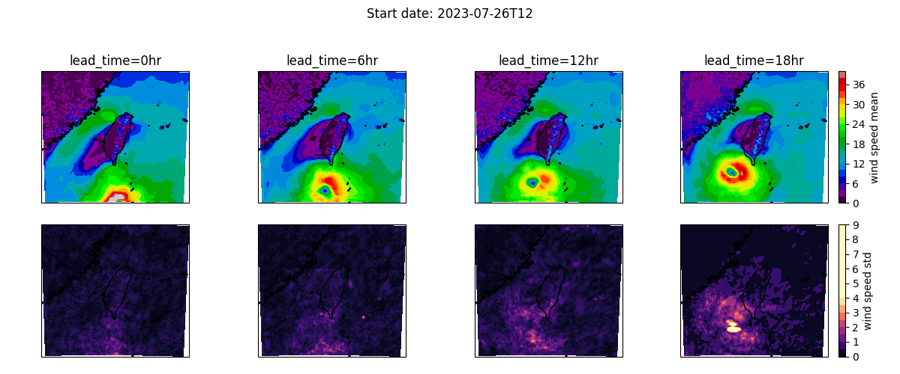

Note
Go to the end to download the full example code.
Ensemble Forecasting with Downscaling#
Custom ensembling workflow with generative downscaling using CorrDiff.
This example demonstrates an ensemble forecasting pipeline that runs a prognostic model ensemble and applies CorrDiff generative downscaling to each step and member. While this example uses SFNO for the prognostic model, the pipeline is model-agnostic and can be reused with other prognostic models that follow the Earth2Studio interfaces.
In this example you will learn:
How to create an ensemble forecast pipeline with CorrDiff downscaling
Saving output ensemble data to a Zarr store
Post-process results
# /// script
# dependencies = [
# "torch==2.9.1", # Match lock file to avoid torch-harmonics issue
# "earth2studio[sfno] @ git+https://github.com/NVIDIA/earth2studio.git@0.13.0",
# "earth2studio[corrdiff] @ git+https://github.com/NVIDIA/earth2studio.git@0.13.0",
# "cartopy",
# ]
# ///
Creating an Ensemble Downscaling Workflow#
To create our own ensemble forecasting with downscaling workflow, we will use the
built-in ensemble workflow earth2studio.run.ensemble() as the reference to
start with. For this to work we need to update how the output coordinates are
calculated for the IO object, as well as add the CorrDiff model’s forward call
into the forecast loop.
As in previous examples, we use dependency injection to define the signature of the pipeline method.
import os
os.makedirs("outputs", exist_ok=True)
from dotenv import load_dotenv
load_dotenv() # TODO: make common example prep function
from datetime import datetime
from math import ceil
import numpy as np
import torch
from loguru import logger
from tqdm import tqdm
from earth2studio.data import DataSource, fetch_data
from earth2studio.io import IOBackend
from earth2studio.models.dx import CorrDiff
from earth2studio.models.px import PrognosticModel
from earth2studio.perturbation import Perturbation
from earth2studio.utils.coords import map_coords, split_coords
from earth2studio.utils.time import to_time_array
def corrdiff_on_hens_ensemble(
time: list[str] | list[datetime] | list[np.datetime64],
nsteps: int,
nensemble: int,
nsamples: int,
prognostic: PrognosticModel,
corrdiff: CorrDiff,
data: DataSource,
io: IOBackend,
perturbation: Perturbation,
batch_size: int | None = None,
) -> IOBackend:
"""Ensemble CorrDiff pipeline
Parameters
----------
time : list[str] | list[datetime] | list[np.datetime64]
Forecast start times
nsteps : int
Number of forecast steps for prognostic model to take
nensemble : int
Number of forecast ensemble members
nsamples : int
Number of samples from CorrDiff model to generate
prognostic : PrognosticModel
Prognostic model
corrdiff : CorrDiff
CorrDiff model
data : DataSource
Data source
io : IOBackend
IO Backend
perturbation : Perturbation
Perturbation method
batch_size : int | None, optional
Ensemble batch size during forecasting. If None, uses nensemble; default None
"""
device = torch.device("cuda" if torch.cuda.is_available() else "cpu")
prognostic = prognostic.to(device)
corrdiff = corrdiff.to(device)
corrdiff.number_of_samples = nsamples
# Fetch initial data for the ensemble
prognostic_ic = prognostic.input_coords()
time = to_time_array(time)
x0, coords0 = fetch_data(
source=data,
time=time,
variable=prognostic_ic["variable"],
lead_time=prognostic_ic["lead_time"],
device=device,
interp_to=prognostic_ic if hasattr(prognostic, "interp_method") else None,
interp_method=getattr(prognostic, "interp_method", "nearest"),
)
# Prepare CorrDiff output coordinates for IO backend
total_coords = corrdiff.output_coords(corrdiff.input_coords())
if "batch" in total_coords:
del total_coords["batch"]
total_coords["time"] = time
total_coords["lead_time"] = np.asarray(
[
prognostic.output_coords(prognostic.input_coords())["lead_time"] * i
for i in range(nsteps + 1)
]
).flatten()
total_coords["ensemble"] = np.arange(nensemble)
total_coords.move_to_end("lead_time", last=False)
total_coords.move_to_end("time", last=False)
total_coords.move_to_end("ensemble", last=False)
variables_to_save = total_coords.pop("variable")
io.add_array(total_coords, variables_to_save)
# Determine batch size and number of batches
batch_size = min(nensemble, batch_size or nensemble)
number_of_batches = ceil(nensemble / batch_size)
logger.info(
f"Starting {nensemble} member ensemble inference with {number_of_batches} batches."
)
# Main ensemble loop
for batch_id in tqdm(
range(0, nensemble, batch_size),
total=number_of_batches,
desc="Ensemble Batches",
):
mini_batch_size = min(batch_size, nensemble - batch_id)
x = x0.to(device)
# Set up coordinates for this batch
coords = {
"ensemble": np.arange(batch_id, batch_id + mini_batch_size),
**coords0.copy(),
}
# Repeat initial condition for each ensemble member in the batch
x = x.unsqueeze(0).repeat(mini_batch_size, *([1] * x.ndim))
x, coords = map_coords(x, coords, prognostic_ic)
x, coords = perturbation(x, coords)
model = prognostic.create_iterator(x, coords)
with tqdm(
total=nsteps + 1,
desc=f"Batch {batch_id} inference",
position=1,
leave=False,
) as pbar:
for step, (x, coords) in enumerate(model):
# Map prognostic outputs to CorrDiff inputs if needed
x, coords = map_coords(x, coords, corrdiff.input_coords())
# CorrDiff workflow: generate and write CorrDiff outputs
x, coords = corrdiff(x, coords)
io.write(*split_coords(x, coords))
pbar.update(1)
if step == nsteps:
break
logger.success("Inference complete")
return io
Set Up#
With the inference pipeline function defined, next let’s create the required components as usual. We need the following:
Prognostic Model: Use the built in SFNO model
earth2studio.models.px.SFNO.CorrDiff Model: Use the built in CorrDiff Taiwan model
earth2studio.models.dx.CorrDiffTaiwan.Datasource: Pull data from the GFS data api
earth2studio.data.GFS.IO Backend: Let’s save the outputs into a Zarr store
earth2studio.io.ZarrBackend.
For the prognostic checkpoint, we will use a HENS checkpoint conveniently stored on HuggingFace. Refer to the previous examples for more information about loading these models.
from earth2studio.data import GFS
from earth2studio.io import ZarrBackend
from earth2studio.models.auto import Package
from earth2studio.models.dx import CorrDiffTaiwan
from earth2studio.models.px import SFNO
from earth2studio.perturbation import (
CorrelatedSphericalGaussian,
HemisphericCentredBredVector,
)
# Create data source
data = GFS()
# Load prognostic model
hens_package = Package(
"hf://datasets/maheshankur10/hens/earth2mip_prod_registry/sfno_linear_74chq_sc2_layers8_edim620_wstgl2-epoch70_seed103",
cache_options={
"cache_storage": Package.default_cache("hens_1"),
"same_names": True,
},
)
model = SFNO.load_model(hens_package)
# Set up perturbation method
noise_amplification = torch.zeros(model.input_coords()["variable"].shape[0])
index_z500 = list(model.input_coords()["variable"]).index("z500")
noise_amplification[index_z500] = 39.27
noise_amplification = noise_amplification.reshape(1, 1, 1, -1, 1, 1)
seed_perturbation = CorrelatedSphericalGaussian(noise_amplitude=noise_amplification)
perturbation = HemisphericCentredBredVector(
model, data, seed_perturbation, noise_amplitude=noise_amplification
)
# Load the CorrDiffTaiwan model
corrdiff = CorrDiffTaiwan.load_model(CorrDiffTaiwan.load_default_package())
# Set up IO backend
io = ZarrBackend(
file_name="outputs/18_ensemble_corrdiff.zarr",
chunks={"ensemble": 1, "sample": 1, "time": 1, "lead_time": 1},
backend_kwargs={"overwrite": True},
)
Downloading config.json: 0%| | 0.00/22.4k [00:00<?, ?B/s]
Downloading config.json: 100%|██████████| 22.4k/22.4k [00:00<00:00, 167kB/s]
Downloading config.json: 100%|██████████| 22.4k/22.4k [00:00<00:00, 166kB/s]
Downloading global_means.npy: 0%| | 0.00/720 [00:00<?, ?B/s]
Downloading global_means.npy: 100%|██████████| 720/720 [00:00<00:00, 4.70kB/s]
Downloading global_means.npy: 100%|██████████| 720/720 [00:00<00:00, 4.68kB/s]
Downloading global_stds.npy: 0%| | 0.00/720 [00:00<?, ?B/s]
Downloading global_stds.npy: 100%|██████████| 720/720 [00:00<00:00, 1.07kB/s]
Downloading global_stds.npy: 100%|██████████| 720/720 [00:00<00:00, 1.07kB/s]
Downloading orography.nc: 0%| | 0.00/2.50M [00:00<?, ?B/s]
Downloading orography.nc: 100%|██████████| 2.50M/2.50M [00:00<00:00, 12.2MB/s]
Downloading orography.nc: 100%|██████████| 2.50M/2.50M [00:00<00:00, 11.8MB/s]
Downloading land_mask.nc: 0%| | 0.00/748k [00:00<?, ?B/s]
Downloading land_mask.nc: 100%|██████████| 748k/748k [00:00<00:00, 6.38MB/s]
Downloading land_mask.nc: 100%|██████████| 748k/748k [00:00<00:00, 6.22MB/s]
Downloading best_ckpt_mp0.tar: 0%| | 0.00/8.31G [00:00<?, ?B/s]
Downloading best_ckpt_mp0.tar: 0%| | 10.0M/8.31G [00:00<03:02, 48.8MB/s]
Downloading best_ckpt_mp0.tar: 1%| | 50.0M/8.31G [00:00<00:50, 177MB/s]
Downloading best_ckpt_mp0.tar: 1%| | 90.0M/8.31G [00:00<00:36, 241MB/s]
Downloading best_ckpt_mp0.tar: 2%|▏ | 130M/8.31G [00:00<00:31, 278MB/s]
Downloading best_ckpt_mp0.tar: 2%|▏ | 170M/8.31G [00:00<00:28, 302MB/s]
Downloading best_ckpt_mp0.tar: 2%|▏ | 210M/8.31G [00:00<00:27, 315MB/s]
Downloading best_ckpt_mp0.tar: 3%|▎ | 250M/8.31G [00:00<00:26, 325MB/s]
Downloading best_ckpt_mp0.tar: 3%|▎ | 290M/8.31G [00:01<00:25, 333MB/s]
Downloading best_ckpt_mp0.tar: 4%|▍ | 330M/8.31G [00:01<00:25, 337MB/s]
Downloading best_ckpt_mp0.tar: 4%|▍ | 370M/8.31G [00:01<00:25, 340MB/s]
Downloading best_ckpt_mp0.tar: 5%|▍ | 410M/8.31G [00:01<00:24, 342MB/s]
Downloading best_ckpt_mp0.tar: 5%|▌ | 450M/8.31G [00:01<00:24, 345MB/s]
Downloading best_ckpt_mp0.tar: 6%|▌ | 490M/8.31G [00:01<00:24, 346MB/s]
Downloading best_ckpt_mp0.tar: 6%|▌ | 530M/8.31G [00:01<00:24, 348MB/s]
Downloading best_ckpt_mp0.tar: 7%|▋ | 570M/8.31G [00:01<00:23, 349MB/s]
Downloading best_ckpt_mp0.tar: 7%|▋ | 610M/8.31G [00:02<00:23, 349MB/s]
Downloading best_ckpt_mp0.tar: 8%|▊ | 650M/8.31G [00:02<00:23, 349MB/s]
Downloading best_ckpt_mp0.tar: 8%|▊ | 690M/8.31G [00:02<00:23, 348MB/s]
Downloading best_ckpt_mp0.tar: 9%|▊ | 730M/8.31G [00:02<00:23, 347MB/s]
Downloading best_ckpt_mp0.tar: 9%|▉ | 770M/8.31G [00:02<00:23, 347MB/s]
Downloading best_ckpt_mp0.tar: 10%|▉ | 810M/8.31G [00:02<00:23, 348MB/s]
Downloading best_ckpt_mp0.tar: 10%|▉ | 850M/8.31G [00:02<00:23, 348MB/s]
Downloading best_ckpt_mp0.tar: 10%|█ | 890M/8.31G [00:02<00:23, 347MB/s]
Downloading best_ckpt_mp0.tar: 11%|█ | 930M/8.31G [00:02<00:22, 347MB/s]
Downloading best_ckpt_mp0.tar: 11%|█▏ | 970M/8.31G [00:03<00:22, 345MB/s]
Downloading best_ckpt_mp0.tar: 12%|█▏ | 0.99G/8.31G [00:03<00:22, 345MB/s]
Downloading best_ckpt_mp0.tar: 12%|█▏ | 1.03G/8.31G [00:03<00:22, 344MB/s]
Downloading best_ckpt_mp0.tar: 13%|█▎ | 1.06G/8.31G [00:03<00:22, 344MB/s]
Downloading best_ckpt_mp0.tar: 13%|█▎ | 1.10G/8.31G [00:03<00:22, 345MB/s]
Downloading best_ckpt_mp0.tar: 14%|█▍ | 1.14G/8.31G [00:03<00:22, 347MB/s]
Downloading best_ckpt_mp0.tar: 14%|█▍ | 1.18G/8.31G [00:03<00:21, 349MB/s]
Downloading best_ckpt_mp0.tar: 15%|█▍ | 1.22G/8.31G [00:03<00:21, 349MB/s]
Downloading best_ckpt_mp0.tar: 15%|█▌ | 1.26G/8.31G [00:04<00:21, 348MB/s]
Downloading best_ckpt_mp0.tar: 16%|█▌ | 1.30G/8.31G [00:04<00:21, 349MB/s]
Downloading best_ckpt_mp0.tar: 16%|█▌ | 1.34G/8.31G [00:04<00:21, 349MB/s]
Downloading best_ckpt_mp0.tar: 17%|█▋ | 1.38G/8.31G [00:04<00:21, 350MB/s]
Downloading best_ckpt_mp0.tar: 17%|█▋ | 1.42G/8.31G [00:04<00:21, 349MB/s]
Downloading best_ckpt_mp0.tar: 18%|█▊ | 1.46G/8.31G [00:04<00:20, 351MB/s]
Downloading best_ckpt_mp0.tar: 18%|█▊ | 1.49G/8.31G [00:04<00:20, 351MB/s]
Downloading best_ckpt_mp0.tar: 18%|█▊ | 1.53G/8.31G [00:04<00:20, 351MB/s]
Downloading best_ckpt_mp0.tar: 19%|█▉ | 1.57G/8.31G [00:05<00:20, 349MB/s]
Downloading best_ckpt_mp0.tar: 19%|█▉ | 1.61G/8.31G [00:05<00:20, 350MB/s]
Downloading best_ckpt_mp0.tar: 20%|█▉ | 1.65G/8.31G [00:05<00:20, 349MB/s]
Downloading best_ckpt_mp0.tar: 20%|██ | 1.69G/8.31G [00:05<00:20, 349MB/s]
Downloading best_ckpt_mp0.tar: 21%|██ | 1.73G/8.31G [00:05<00:20, 350MB/s]
Downloading best_ckpt_mp0.tar: 21%|██▏ | 1.77G/8.31G [00:05<00:20, 350MB/s]
Downloading best_ckpt_mp0.tar: 22%|██▏ | 1.81G/8.31G [00:05<00:19, 351MB/s]
Downloading best_ckpt_mp0.tar: 22%|██▏ | 1.85G/8.31G [00:05<00:19, 350MB/s]
Downloading best_ckpt_mp0.tar: 23%|██▎ | 1.88G/8.31G [00:06<00:19, 349MB/s]
Downloading best_ckpt_mp0.tar: 23%|██▎ | 1.92G/8.31G [00:06<00:19, 349MB/s]
Downloading best_ckpt_mp0.tar: 24%|██▎ | 1.96G/8.31G [00:06<00:19, 351MB/s]
Downloading best_ckpt_mp0.tar: 24%|██▍ | 2.00G/8.31G [00:06<00:19, 352MB/s]
Downloading best_ckpt_mp0.tar: 25%|██▍ | 2.04G/8.31G [00:06<00:19, 353MB/s]
Downloading best_ckpt_mp0.tar: 25%|██▌ | 2.08G/8.31G [00:06<00:19, 352MB/s]
Downloading best_ckpt_mp0.tar: 26%|██▌ | 2.12G/8.31G [00:06<00:18, 353MB/s]
Downloading best_ckpt_mp0.tar: 26%|██▌ | 2.16G/8.31G [00:06<00:18, 352MB/s]
Downloading best_ckpt_mp0.tar: 26%|██▋ | 2.20G/8.31G [00:06<00:18, 352MB/s]
Downloading best_ckpt_mp0.tar: 27%|██▋ | 2.24G/8.31G [00:07<00:18, 351MB/s]
Downloading best_ckpt_mp0.tar: 27%|██▋ | 2.28G/8.31G [00:07<00:18, 352MB/s]
Downloading best_ckpt_mp0.tar: 28%|██▊ | 2.31G/8.31G [00:07<00:18, 353MB/s]
Downloading best_ckpt_mp0.tar: 28%|██▊ | 2.35G/8.31G [00:07<00:18, 352MB/s]
Downloading best_ckpt_mp0.tar: 29%|██▉ | 2.39G/8.31G [00:07<00:18, 352MB/s]
Downloading best_ckpt_mp0.tar: 29%|██▉ | 2.43G/8.31G [00:07<00:17, 351MB/s]
Downloading best_ckpt_mp0.tar: 30%|██▉ | 2.47G/8.31G [00:07<00:17, 351MB/s]
Downloading best_ckpt_mp0.tar: 30%|███ | 2.51G/8.31G [00:07<00:17, 351MB/s]
Downloading best_ckpt_mp0.tar: 31%|███ | 2.55G/8.31G [00:08<00:17, 348MB/s]
Downloading best_ckpt_mp0.tar: 31%|███ | 2.59G/8.31G [00:08<00:17, 348MB/s]
Downloading best_ckpt_mp0.tar: 32%|███▏ | 2.63G/8.31G [00:08<00:17, 347MB/s]
Downloading best_ckpt_mp0.tar: 32%|███▏ | 2.67G/8.31G [00:08<00:17, 347MB/s]
Downloading best_ckpt_mp0.tar: 33%|███▎ | 2.71G/8.31G [00:08<00:17, 347MB/s]
Downloading best_ckpt_mp0.tar: 33%|███▎ | 2.74G/8.31G [00:08<00:17, 347MB/s]
Downloading best_ckpt_mp0.tar: 33%|███▎ | 2.78G/8.31G [00:08<00:17, 345MB/s]
Downloading best_ckpt_mp0.tar: 34%|███▍ | 2.82G/8.31G [00:08<00:16, 347MB/s]
Downloading best_ckpt_mp0.tar: 34%|███▍ | 2.86G/8.31G [00:09<00:16, 348MB/s]
Downloading best_ckpt_mp0.tar: 35%|███▍ | 2.90G/8.31G [00:09<00:16, 349MB/s]
Downloading best_ckpt_mp0.tar: 35%|███▌ | 2.94G/8.31G [00:09<00:16, 348MB/s]
Downloading best_ckpt_mp0.tar: 36%|███▌ | 2.98G/8.31G [00:09<00:16, 347MB/s]
Downloading best_ckpt_mp0.tar: 36%|███▋ | 3.02G/8.31G [00:09<00:16, 347MB/s]
Downloading best_ckpt_mp0.tar: 37%|███▋ | 3.06G/8.31G [00:09<00:16, 345MB/s]
Downloading best_ckpt_mp0.tar: 37%|███▋ | 3.10G/8.31G [00:09<00:16, 341MB/s]
Downloading best_ckpt_mp0.tar: 38%|███▊ | 3.13G/8.31G [00:09<00:16, 340MB/s]
Downloading best_ckpt_mp0.tar: 38%|███▊ | 3.17G/8.31G [00:09<00:16, 338MB/s]
Downloading best_ckpt_mp0.tar: 39%|███▊ | 3.21G/8.31G [00:10<00:16, 338MB/s]
Downloading best_ckpt_mp0.tar: 39%|███▉ | 3.25G/8.31G [00:10<00:16, 339MB/s]
Downloading best_ckpt_mp0.tar: 40%|███▉ | 3.29G/8.31G [00:10<00:15, 341MB/s]
Downloading best_ckpt_mp0.tar: 40%|████ | 3.33G/8.31G [00:10<00:15, 345MB/s]
Downloading best_ckpt_mp0.tar: 41%|████ | 3.37G/8.31G [00:10<00:15, 348MB/s]
Downloading best_ckpt_mp0.tar: 41%|████ | 3.41G/8.31G [00:10<00:14, 351MB/s]
Downloading best_ckpt_mp0.tar: 41%|████▏ | 3.45G/8.31G [00:10<00:14, 352MB/s]
Downloading best_ckpt_mp0.tar: 42%|████▏ | 3.49G/8.31G [00:10<00:14, 356MB/s]
Downloading best_ckpt_mp0.tar: 42%|████▏ | 3.53G/8.31G [00:11<00:14, 355MB/s]
Downloading best_ckpt_mp0.tar: 43%|████▎ | 3.56G/8.31G [00:11<00:14, 357MB/s]
Downloading best_ckpt_mp0.tar: 43%|████▎ | 3.60G/8.31G [00:11<00:14, 356MB/s]
Downloading best_ckpt_mp0.tar: 44%|████▍ | 3.64G/8.31G [00:11<00:14, 356MB/s]
Downloading best_ckpt_mp0.tar: 44%|████▍ | 3.68G/8.31G [00:11<00:13, 356MB/s]
Downloading best_ckpt_mp0.tar: 45%|████▍ | 3.72G/8.31G [00:11<00:13, 355MB/s]
Downloading best_ckpt_mp0.tar: 45%|████▌ | 3.76G/8.31G [00:11<00:13, 355MB/s]
Downloading best_ckpt_mp0.tar: 46%|████▌ | 3.80G/8.31G [00:11<00:13, 354MB/s]
Downloading best_ckpt_mp0.tar: 46%|████▌ | 3.84G/8.31G [00:12<00:13, 356MB/s]
Downloading best_ckpt_mp0.tar: 47%|████▋ | 3.88G/8.31G [00:12<00:13, 355MB/s]
Downloading best_ckpt_mp0.tar: 47%|████▋ | 3.92G/8.31G [00:12<00:13, 356MB/s]
Downloading best_ckpt_mp0.tar: 48%|████▊ | 3.96G/8.31G [00:12<00:13, 357MB/s]
Downloading best_ckpt_mp0.tar: 48%|████▊ | 3.99G/8.31G [00:12<00:20, 230MB/s]
Downloading best_ckpt_mp0.tar: 48%|████▊ | 4.02G/8.31G [00:12<00:18, 244MB/s]
Downloading best_ckpt_mp0.tar: 49%|████▉ | 4.06G/8.31G [00:12<00:16, 271MB/s]
Downloading best_ckpt_mp0.tar: 49%|████▉ | 4.10G/8.31G [00:13<00:15, 293MB/s]
Downloading best_ckpt_mp0.tar: 50%|████▉ | 4.14G/8.31G [00:13<00:14, 310MB/s]
Downloading best_ckpt_mp0.tar: 50%|█████ | 4.18G/8.31G [00:13<00:13, 323MB/s]
Downloading best_ckpt_mp0.tar: 51%|█████ | 4.22G/8.31G [00:13<00:13, 333MB/s]
Downloading best_ckpt_mp0.tar: 51%|█████ | 4.26G/8.31G [00:13<00:12, 339MB/s]
Downloading best_ckpt_mp0.tar: 52%|█████▏ | 4.30G/8.31G [00:13<00:12, 345MB/s]
Downloading best_ckpt_mp0.tar: 52%|█████▏ | 4.34G/8.31G [00:13<00:12, 350MB/s]
Downloading best_ckpt_mp0.tar: 53%|█████▎ | 4.38G/8.31G [00:13<00:11, 354MB/s]
Downloading best_ckpt_mp0.tar: 53%|█████▎ | 4.41G/8.31G [00:13<00:11, 355MB/s]
Downloading best_ckpt_mp0.tar: 54%|█████▎ | 4.45G/8.31G [00:14<00:11, 355MB/s]
Downloading best_ckpt_mp0.tar: 54%|█████▍ | 4.49G/8.31G [00:14<00:11, 356MB/s]
Downloading best_ckpt_mp0.tar: 55%|█████▍ | 4.53G/8.31G [00:14<00:11, 357MB/s]
Downloading best_ckpt_mp0.tar: 55%|█████▌ | 4.57G/8.31G [00:14<00:11, 356MB/s]
Downloading best_ckpt_mp0.tar: 55%|█████▌ | 4.61G/8.31G [00:14<00:11, 357MB/s]
Downloading best_ckpt_mp0.tar: 56%|█████▌ | 4.65G/8.31G [00:14<00:11, 352MB/s]
Downloading best_ckpt_mp0.tar: 56%|█████▋ | 4.69G/8.31G [00:14<00:11, 351MB/s]
Downloading best_ckpt_mp0.tar: 57%|█████▋ | 4.73G/8.31G [00:14<00:10, 352MB/s]
Downloading best_ckpt_mp0.tar: 57%|█████▋ | 4.77G/8.31G [00:15<00:10, 353MB/s]
Downloading best_ckpt_mp0.tar: 58%|█████▊ | 4.80G/8.31G [00:15<00:10, 351MB/s]
Downloading best_ckpt_mp0.tar: 58%|█████▊ | 4.84G/8.31G [00:15<00:10, 351MB/s]
Downloading best_ckpt_mp0.tar: 59%|█████▉ | 4.88G/8.31G [00:15<00:10, 353MB/s]
Downloading best_ckpt_mp0.tar: 59%|█████▉ | 4.92G/8.31G [00:15<00:10, 356MB/s]
Downloading best_ckpt_mp0.tar: 60%|█████▉ | 4.96G/8.31G [00:15<00:10, 356MB/s]
Downloading best_ckpt_mp0.tar: 60%|██████ | 5.00G/8.31G [00:15<00:09, 358MB/s]
Downloading best_ckpt_mp0.tar: 61%|██████ | 5.04G/8.31G [00:15<00:09, 359MB/s]
Downloading best_ckpt_mp0.tar: 61%|██████ | 5.08G/8.31G [00:16<00:11, 311MB/s]
Downloading best_ckpt_mp0.tar: 62%|██████▏ | 5.12G/8.31G [00:16<00:11, 298MB/s]
Downloading best_ckpt_mp0.tar: 62%|██████▏ | 5.15G/8.31G [00:16<00:11, 301MB/s]
Downloading best_ckpt_mp0.tar: 62%|██████▏ | 5.19G/8.31G [00:16<00:10, 306MB/s]
Downloading best_ckpt_mp0.tar: 63%|██████▎ | 5.21G/8.31G [00:16<00:10, 307MB/s]
Downloading best_ckpt_mp0.tar: 63%|██████▎ | 5.25G/8.31G [00:16<00:10, 311MB/s]
Downloading best_ckpt_mp0.tar: 64%|██████▎ | 5.29G/8.31G [00:16<00:10, 313MB/s]
Downloading best_ckpt_mp0.tar: 64%|██████▍ | 5.33G/8.31G [00:16<00:10, 314MB/s]
Downloading best_ckpt_mp0.tar: 65%|██████▍ | 5.37G/8.31G [00:17<00:09, 324MB/s]
Downloading best_ckpt_mp0.tar: 65%|██████▌ | 5.41G/8.31G [00:17<00:09, 332MB/s]
Downloading best_ckpt_mp0.tar: 66%|██████▌ | 5.45G/8.31G [00:17<00:09, 341MB/s]
Downloading best_ckpt_mp0.tar: 66%|██████▌ | 5.49G/8.31G [00:17<00:08, 345MB/s]
Downloading best_ckpt_mp0.tar: 67%|██████▋ | 5.53G/8.31G [00:17<00:08, 347MB/s]
Downloading best_ckpt_mp0.tar: 67%|██████▋ | 5.57G/8.31G [00:17<00:08, 350MB/s]
Downloading best_ckpt_mp0.tar: 67%|██████▋ | 5.61G/8.31G [00:17<00:08, 351MB/s]
Downloading best_ckpt_mp0.tar: 68%|██████▊ | 5.64G/8.31G [00:17<00:08, 352MB/s]
Downloading best_ckpt_mp0.tar: 68%|██████▊ | 5.68G/8.31G [00:17<00:07, 355MB/s]
Downloading best_ckpt_mp0.tar: 69%|██████▉ | 5.72G/8.31G [00:18<00:07, 353MB/s]
Downloading best_ckpt_mp0.tar: 69%|██████▉ | 5.76G/8.31G [00:18<00:07, 354MB/s]
Downloading best_ckpt_mp0.tar: 70%|██████▉ | 5.80G/8.31G [00:18<00:07, 355MB/s]
Downloading best_ckpt_mp0.tar: 70%|███████ | 5.84G/8.31G [00:18<00:07, 357MB/s]
Downloading best_ckpt_mp0.tar: 71%|███████ | 5.88G/8.31G [00:18<00:07, 357MB/s]
Downloading best_ckpt_mp0.tar: 71%|███████ | 5.92G/8.31G [00:18<00:07, 356MB/s]
Downloading best_ckpt_mp0.tar: 72%|███████▏ | 5.96G/8.31G [00:18<00:07, 356MB/s]
Downloading best_ckpt_mp0.tar: 72%|███████▏ | 6.00G/8.31G [00:18<00:06, 357MB/s]
Downloading best_ckpt_mp0.tar: 73%|███████▎ | 6.04G/8.31G [00:19<00:06, 357MB/s]
Downloading best_ckpt_mp0.tar: 73%|███████▎ | 6.07G/8.31G [00:19<00:06, 355MB/s]
Downloading best_ckpt_mp0.tar: 74%|███████▎ | 6.11G/8.31G [00:19<00:06, 354MB/s]
Downloading best_ckpt_mp0.tar: 74%|███████▍ | 6.15G/8.31G [00:19<00:06, 356MB/s]
Downloading best_ckpt_mp0.tar: 75%|███████▍ | 6.19G/8.31G [00:19<00:06, 357MB/s]
Downloading best_ckpt_mp0.tar: 75%|███████▍ | 6.23G/8.31G [00:19<00:06, 359MB/s]
Downloading best_ckpt_mp0.tar: 75%|███████▌ | 6.27G/8.31G [00:19<00:06, 358MB/s]
Downloading best_ckpt_mp0.tar: 76%|███████▌ | 6.31G/8.31G [00:19<00:05, 359MB/s]
Downloading best_ckpt_mp0.tar: 76%|███████▋ | 6.35G/8.31G [00:19<00:05, 357MB/s]
Downloading best_ckpt_mp0.tar: 77%|███████▋ | 6.39G/8.31G [00:20<00:05, 356MB/s]
Downloading best_ckpt_mp0.tar: 77%|███████▋ | 6.43G/8.31G [00:20<00:05, 351MB/s]
Downloading best_ckpt_mp0.tar: 78%|███████▊ | 6.46G/8.31G [00:20<00:05, 341MB/s]
Downloading best_ckpt_mp0.tar: 78%|███████▊ | 6.50G/8.31G [00:20<00:05, 343MB/s]
Downloading best_ckpt_mp0.tar: 79%|███████▊ | 6.54G/8.31G [00:20<00:05, 346MB/s]
Downloading best_ckpt_mp0.tar: 79%|███████▉ | 6.58G/8.31G [00:20<00:05, 348MB/s]
Downloading best_ckpt_mp0.tar: 80%|███████▉ | 6.62G/8.31G [00:20<00:05, 352MB/s]
Downloading best_ckpt_mp0.tar: 80%|████████ | 6.66G/8.31G [00:20<00:04, 354MB/s]
Downloading best_ckpt_mp0.tar: 81%|████████ | 6.70G/8.31G [00:21<00:04, 355MB/s]
Downloading best_ckpt_mp0.tar: 81%|████████ | 6.74G/8.31G [00:21<00:04, 355MB/s]
Downloading best_ckpt_mp0.tar: 82%|████████▏ | 6.78G/8.31G [00:21<00:04, 357MB/s]
Downloading best_ckpt_mp0.tar: 82%|████████▏ | 6.82G/8.31G [00:21<00:04, 355MB/s]
Downloading best_ckpt_mp0.tar: 83%|████████▎ | 6.86G/8.31G [00:21<00:04, 355MB/s]
Downloading best_ckpt_mp0.tar: 83%|████████▎ | 6.89G/8.31G [00:21<00:04, 355MB/s]
Downloading best_ckpt_mp0.tar: 83%|████████▎ | 6.93G/8.31G [00:21<00:04, 354MB/s]
Downloading best_ckpt_mp0.tar: 84%|████████▍ | 6.97G/8.31G [00:21<00:04, 355MB/s]
Downloading best_ckpt_mp0.tar: 84%|████████▍ | 7.01G/8.31G [00:22<00:03, 357MB/s]
Downloading best_ckpt_mp0.tar: 85%|████████▍ | 7.05G/8.31G [00:22<00:03, 358MB/s]
Downloading best_ckpt_mp0.tar: 85%|████████▌ | 7.09G/8.31G [00:22<00:03, 360MB/s]
Downloading best_ckpt_mp0.tar: 86%|████████▌ | 7.13G/8.31G [00:22<00:03, 361MB/s]
Downloading best_ckpt_mp0.tar: 86%|████████▋ | 7.17G/8.31G [00:22<00:03, 358MB/s]
Downloading best_ckpt_mp0.tar: 87%|████████▋ | 7.21G/8.31G [00:22<00:03, 359MB/s]
Downloading best_ckpt_mp0.tar: 87%|████████▋ | 7.25G/8.31G [00:22<00:03, 361MB/s]
Downloading best_ckpt_mp0.tar: 88%|████████▊ | 7.29G/8.31G [00:22<00:03, 361MB/s]
Downloading best_ckpt_mp0.tar: 88%|████████▊ | 7.32G/8.31G [00:22<00:02, 361MB/s]
Downloading best_ckpt_mp0.tar: 89%|████████▊ | 7.36G/8.31G [00:23<00:02, 358MB/s]
Downloading best_ckpt_mp0.tar: 89%|████████▉ | 7.40G/8.31G [00:23<00:02, 357MB/s]
Downloading best_ckpt_mp0.tar: 90%|████████▉ | 7.44G/8.31G [00:23<00:02, 355MB/s]
Downloading best_ckpt_mp0.tar: 90%|█████████ | 7.48G/8.31G [00:23<00:02, 355MB/s]
Downloading best_ckpt_mp0.tar: 90%|█████████ | 7.52G/8.31G [00:23<00:02, 355MB/s]
Downloading best_ckpt_mp0.tar: 91%|█████████ | 7.56G/8.31G [00:23<00:02, 356MB/s]
Downloading best_ckpt_mp0.tar: 91%|█████████▏| 7.60G/8.31G [00:23<00:02, 356MB/s]
Downloading best_ckpt_mp0.tar: 92%|█████████▏| 7.64G/8.31G [00:23<00:02, 355MB/s]
Downloading best_ckpt_mp0.tar: 92%|█████████▏| 7.68G/8.31G [00:23<00:01, 355MB/s]
Downloading best_ckpt_mp0.tar: 93%|█████████▎| 7.71G/8.31G [00:24<00:01, 355MB/s]
Downloading best_ckpt_mp0.tar: 93%|█████████▎| 7.75G/8.31G [00:24<00:01, 356MB/s]
Downloading best_ckpt_mp0.tar: 94%|█████████▍| 7.79G/8.31G [00:24<00:01, 355MB/s]
Downloading best_ckpt_mp0.tar: 94%|█████████▍| 7.83G/8.31G [00:24<00:01, 353MB/s]
Downloading best_ckpt_mp0.tar: 95%|█████████▍| 7.87G/8.31G [00:24<00:01, 350MB/s]
Downloading best_ckpt_mp0.tar: 95%|█████████▌| 7.91G/8.31G [00:24<00:01, 353MB/s]
Downloading best_ckpt_mp0.tar: 96%|█████████▌| 7.95G/8.31G [00:24<00:01, 353MB/s]
Downloading best_ckpt_mp0.tar: 96%|█████████▌| 7.99G/8.31G [00:24<00:00, 353MB/s]
Downloading best_ckpt_mp0.tar: 97%|█████████▋| 8.03G/8.31G [00:25<00:00, 351MB/s]
Downloading best_ckpt_mp0.tar: 97%|█████████▋| 8.07G/8.31G [00:25<00:00, 351MB/s]
Downloading best_ckpt_mp0.tar: 98%|█████████▊| 8.11G/8.31G [00:25<00:00, 352MB/s]
Downloading best_ckpt_mp0.tar: 98%|█████████▊| 8.14G/8.31G [00:25<00:00, 352MB/s]
Downloading best_ckpt_mp0.tar: 98%|█████████▊| 8.18G/8.31G [00:25<00:00, 352MB/s]
Downloading best_ckpt_mp0.tar: 99%|█████████▉| 8.22G/8.31G [00:25<00:00, 353MB/s]
Downloading best_ckpt_mp0.tar: 99%|█████████▉| 8.26G/8.31G [00:25<00:00, 353MB/s]
Downloading best_ckpt_mp0.tar: 100%|█████████▉| 8.30G/8.31G [00:25<00:00, 354MB/s]
Downloading best_ckpt_mp0.tar: 100%|██████████| 8.31G/8.31G [00:30<00:00, 297MB/s]
Run#
Execute the pipeline. For this example, we use the period of Typhoon Doksuri which has a track over the Taiwan region. https://en.wikipedia.org/wiki/Typhoon_Doksuri
start_date = datetime(2023, 7, 26, 12)
corrdiff_on_hens_ensemble(
time=[start_date],
nsteps=4,
nensemble=2,
nsamples=3,
prognostic=model,
corrdiff=corrdiff,
data=data,
io=io,
perturbation=perturbation,
batch_size=1,
)
Fetching GFS data: 0%| | 0/74 [00:00<?, ?it/s]
2026-03-19 08:31:25.857 | DEBUG | earth2studio.data.gfs:fetch_array:382 - Fetching GFS grib file: noaa-gfs-bdp-pds/gfs.20230726/12/atmos/gfs.t12z.pgrb2.0p25.f000 267128994-931745
Fetching GFS data: 0%| | 0/74 [00:00<?, ?it/s]
2026-03-19 08:31:25.860 | DEBUG | earth2studio.data.gfs:fetch_array:382 - Fetching GFS grib file: noaa-gfs-bdp-pds/gfs.20230726/12/atmos/gfs.t12z.pgrb2.0p25.f000 152954552-734507
Fetching GFS data: 0%| | 0/74 [00:00<?, ?it/s]
2026-03-19 08:31:25.862 | DEBUG | earth2studio.data.gfs:fetch_array:382 - Fetching GFS grib file: noaa-gfs-bdp-pds/gfs.20230726/12/atmos/gfs.t12z.pgrb2.0p25.f000 259942690-699553
Fetching GFS data: 0%| | 0/74 [00:00<?, ?it/s]
2026-03-19 08:31:25.864 | DEBUG | earth2studio.data.gfs:fetch_array:382 - Fetching GFS grib file: noaa-gfs-bdp-pds/gfs.20230726/12/atmos/gfs.t12z.pgrb2.0p25.f000 197154535-979293
Fetching GFS data: 0%| | 0/74 [00:00<?, ?it/s]
2026-03-19 08:31:25.866 | DEBUG | earth2studio.data.gfs:fetch_array:382 - Fetching GFS grib file: noaa-gfs-bdp-pds/gfs.20230726/12/atmos/gfs.t12z.pgrb2.0p25.f000 210900085-599473
Fetching GFS data: 0%| | 0/74 [00:00<?, ?it/s]
2026-03-19 08:31:25.867 | DEBUG | earth2studio.data.gfs:fetch_array:382 - Fetching GFS grib file: noaa-gfs-bdp-pds/gfs.20230726/12/atmos/gfs.t12z.pgrb2.0p25.f000 462659238-976185
Fetching GFS data: 0%| | 0/74 [00:00<?, ?it/s]
2026-03-19 08:31:25.869 | DEBUG | earth2studio.data.gfs:fetch_array:382 - Fetching GFS grib file: noaa-gfs-bdp-pds/gfs.20230726/12/atmos/gfs.t12z.pgrb2.0p25.f000 244736133-971156
Fetching GFS data: 0%| | 0/74 [00:00<?, ?it/s]
2026-03-19 08:31:25.871 | DEBUG | earth2studio.data.gfs:fetch_array:382 - Fetching GFS grib file: noaa-gfs-bdp-pds/gfs.20230726/12/atmos/gfs.t12z.pgrb2.0p25.f000 303644500-866618
Fetching GFS data: 0%| | 0/74 [00:00<?, ?it/s]
2026-03-19 08:31:25.873 | DEBUG | earth2studio.data.gfs:fetch_array:382 - Fetching GFS grib file: noaa-gfs-bdp-pds/gfs.20230726/12/atmos/gfs.t12z.pgrb2.0p25.f000 344328811-574848
Fetching GFS data: 0%| | 0/74 [00:00<?, ?it/s]
2026-03-19 08:31:25.875 | DEBUG | earth2studio.data.gfs:fetch_array:382 - Fetching GFS grib file: noaa-gfs-bdp-pds/gfs.20230726/12/atmos/gfs.t12z.pgrb2.0p25.f000 216466018-751349
Fetching GFS data: 0%| | 0/74 [00:00<?, ?it/s]
2026-03-19 08:31:25.876 | DEBUG | earth2studio.data.gfs:fetch_array:382 - Fetching GFS grib file: noaa-gfs-bdp-pds/gfs.20230726/12/atmos/gfs.t12z.pgrb2.0p25.f000 366058634-576713
Fetching GFS data: 0%| | 0/74 [00:00<?, ?it/s]
2026-03-19 08:31:25.878 | DEBUG | earth2studio.data.gfs:fetch_array:382 - Fetching GFS grib file: noaa-gfs-bdp-pds/gfs.20230726/12/atmos/gfs.t12z.pgrb2.0p25.f000 284543458-1236550
Fetching GFS data: 0%| | 0/74 [00:00<?, ?it/s]
2026-03-19 08:31:25.879 | DEBUG | earth2studio.data.gfs:fetch_array:382 - Fetching GFS grib file: noaa-gfs-bdp-pds/gfs.20230726/12/atmos/gfs.t12z.pgrb2.0p25.f000 200234137-581208
Fetching GFS data: 0%| | 0/74 [00:00<?, ?it/s]
2026-03-19 08:31:25.881 | DEBUG | earth2studio.data.gfs:fetch_array:382 - Fetching GFS grib file: noaa-gfs-bdp-pds/gfs.20230726/12/atmos/gfs.t12z.pgrb2.0p25.f000 416320713-978457
Fetching GFS data: 0%| | 0/74 [00:00<?, ?it/s]
2026-03-19 08:31:25.883 | DEBUG | earth2studio.data.gfs:fetch_array:382 - Fetching GFS grib file: noaa-gfs-bdp-pds/gfs.20230726/12/atmos/gfs.t12z.pgrb2.0p25.f000 200815345-581647
Fetching GFS data: 0%| | 0/74 [00:00<?, ?it/s]
2026-03-19 08:31:25.885 | DEBUG | earth2studio.data.gfs:fetch_array:382 - Fetching GFS grib file: noaa-gfs-bdp-pds/gfs.20230726/12/atmos/gfs.t12z.pgrb2.0p25.f000 222592109-632560
Fetching GFS data: 0%| | 0/74 [00:00<?, ?it/s]
2026-03-19 08:31:25.886 | DEBUG | earth2studio.data.gfs:fetch_array:382 - Fetching GFS grib file: noaa-gfs-bdp-pds/gfs.20230726/12/atmos/gfs.t12z.pgrb2.0p25.f000 402713499-1000514
Fetching GFS data: 0%| | 0/74 [00:00<?, ?it/s]
2026-03-19 08:31:25.888 | DEBUG | earth2studio.data.gfs:fetch_array:382 - Fetching GFS grib file: noaa-gfs-bdp-pds/gfs.20230726/12/atmos/gfs.t12z.pgrb2.0p25.f000 337879359-909151
Fetching GFS data: 0%| | 0/74 [00:00<?, ?it/s]
2026-03-19 08:31:25.889 | DEBUG | earth2studio.data.gfs:fetch_array:382 - Fetching GFS grib file: noaa-gfs-bdp-pds/gfs.20230726/12/atmos/gfs.t12z.pgrb2.0p25.f000 184898577-743713
Fetching GFS data: 0%| | 0/74 [00:00<?, ?it/s]
2026-03-19 08:31:25.891 | DEBUG | earth2studio.data.gfs:fetch_array:382 - Fetching GFS grib file: noaa-gfs-bdp-pds/gfs.20230726/12/atmos/gfs.t12z.pgrb2.0p25.f000 282606306-751832
Fetching GFS data: 0%| | 0/74 [00:00<?, ?it/s]
2026-03-19 08:31:25.893 | DEBUG | earth2studio.data.gfs:fetch_array:382 - Fetching GFS grib file: noaa-gfs-bdp-pds/gfs.20230726/12/atmos/gfs.t12z.pgrb2.0p25.f000 397284159-978983
Fetching GFS data: 0%| | 0/74 [00:00<?, ?it/s]
2026-03-19 08:31:25.894 | DEBUG | earth2studio.data.gfs:fetch_array:382 - Fetching GFS grib file: noaa-gfs-bdp-pds/gfs.20230726/12/atmos/gfs.t12z.pgrb2.0p25.f000 189722384-975519
Fetching GFS data: 0%| | 0/74 [00:00<?, ?it/s]
2026-03-19 08:31:25.895 | DEBUG | earth2studio.data.gfs:fetch_array:382 - Fetching GFS grib file: noaa-gfs-bdp-pds/gfs.20230726/12/atmos/gfs.t12z.pgrb2.0p25.f000 173410795-631361
Fetching GFS data: 0%| | 0/74 [00:00<?, ?it/s]
2026-03-19 08:31:25.896 | DEBUG | earth2studio.data.gfs:fetch_array:382 - Fetching GFS grib file: noaa-gfs-bdp-pds/gfs.20230726/12/atmos/gfs.t12z.pgrb2.0p25.f000 211499558-615093
Fetching GFS data: 0%| | 0/74 [00:00<?, ?it/s]
2026-03-19 08:31:25.897 | DEBUG | earth2studio.data.gfs:fetch_array:382 - Fetching GFS grib file: noaa-gfs-bdp-pds/gfs.20230726/12/atmos/gfs.t12z.pgrb2.0p25.f000 260642243-729677
Fetching GFS data: 0%| | 0/74 [00:00<?, ?it/s]
2026-03-19 08:31:25.899 | DEBUG | earth2studio.data.gfs:fetch_array:382 - Fetching GFS grib file: noaa-gfs-bdp-pds/gfs.20230726/12/atmos/gfs.t12z.pgrb2.0p25.f000 262608425-1183204
Fetching GFS data: 0%| | 0/74 [00:00<?, ?it/s]
2026-03-19 08:31:25.900 | DEBUG | earth2studio.data.gfs:fetch_array:382 - Fetching GFS grib file: noaa-gfs-bdp-pds/gfs.20230726/12/atmos/gfs.t12z.pgrb2.0p25.f000 190697903-918774
Fetching GFS data: 0%| | 0/74 [00:00<?, ?it/s]
2026-03-19 08:31:25.901 | DEBUG | earth2studio.data.gfs:fetch_array:382 - Fetching GFS grib file: noaa-gfs-bdp-pds/gfs.20230726/12/atmos/gfs.t12z.pgrb2.0p25.f000 175490539-1171303
Fetching GFS data: 0%| | 0/74 [00:00<?, ?it/s]
2026-03-19 08:31:25.902 | DEBUG | earth2studio.data.gfs:fetch_array:382 - Fetching GFS grib file: noaa-gfs-bdp-pds/gfs.20230726/12/atmos/gfs.t12z.pgrb2.0p25.f000 310189700-963719
Fetching GFS data: 0%| | 0/74 [00:00<?, ?it/s]
2026-03-19 08:31:25.903 | DEBUG | earth2studio.data.gfs:fetch_array:382 - Fetching GFS grib file: noaa-gfs-bdp-pds/gfs.20230726/12/atmos/gfs.t12z.pgrb2.0p25.f000 179077608-952927
Fetching GFS data: 0%| | 0/74 [00:00<?, ?it/s]
2026-03-19 08:31:25.904 | DEBUG | earth2studio.data.gfs:fetch_array:382 - Fetching GFS grib file: noaa-gfs-bdp-pds/gfs.20230726/12/atmos/gfs.t12z.pgrb2.0p25.f000 152311738-642814
Fetching GFS data: 0%| | 0/74 [00:00<?, ?it/s]
2026-03-19 08:31:25.905 | DEBUG | earth2studio.data.gfs:fetch_array:382 - Fetching GFS grib file: noaa-gfs-bdp-pds/gfs.20230726/12/atmos/gfs.t12z.pgrb2.0p25.f000 204794173-735132
Fetching GFS data: 0%| | 0/74 [00:00<?, ?it/s]
2026-03-19 08:31:25.906 | DEBUG | earth2studio.data.gfs:fetch_array:382 - Fetching GFS grib file: noaa-gfs-bdp-pds/gfs.20230726/12/atmos/gfs.t12z.pgrb2.0p25.f000 207648310-1058492
Fetching GFS data: 0%| | 0/74 [00:00<?, ?it/s]
2026-03-19 08:31:25.907 | DEBUG | earth2studio.data.gfs:fetch_array:382 - Fetching GFS grib file: noaa-gfs-bdp-pds/gfs.20230726/12/atmos/gfs.t12z.pgrb2.0p25.f000 412675928-519645
Fetching GFS data: 0%| | 0/74 [00:00<?, ?it/s]
2026-03-19 08:31:25.908 | DEBUG | earth2studio.data.gfs:fetch_array:382 - Fetching GFS grib file: noaa-gfs-bdp-pds/gfs.20230726/12/atmos/gfs.t12z.pgrb2.0p25.f000 424364948-1230478
Fetching GFS data: 0%| | 0/74 [00:00<?, ?it/s]
2026-03-19 08:31:25.910 | DEBUG | earth2studio.data.gfs:fetch_array:382 - Fetching GFS grib file: noaa-gfs-bdp-pds/gfs.20230726/12/atmos/gfs.t12z.pgrb2.0p25.f000 195264441-761344
Fetching GFS data: 0%| | 0/74 [00:00<?, ?it/s]
2026-03-19 08:31:25.911 | DEBUG | earth2studio.data.gfs:fetch_array:382 - Fetching GFS grib file: noaa-gfs-bdp-pds/gfs.20230726/12/atmos/gfs.t12z.pgrb2.0p25.f000 180030535-895218
Fetching GFS data: 0%| | 0/74 [00:00<?, ?it/s]
2026-03-19 08:31:25.912 | DEBUG | earth2studio.data.gfs:fetch_array:382 - Fetching GFS grib file: noaa-gfs-bdp-pds/gfs.20230726/12/atmos/gfs.t12z.pgrb2.0p25.f000 154002716-1022838
Fetching GFS data: 0%| | 0/74 [00:00<?, ?it/s]
2026-03-19 08:31:25.913 | DEBUG | earth2studio.data.gfs:fetch_array:382 - Fetching GFS grib file: noaa-gfs-bdp-pds/gfs.20230726/12/atmos/gfs.t12z.pgrb2.0p25.f000 157303173-901421
Fetching GFS data: 0%| | 0/74 [00:00<?, ?it/s]
2026-03-19 08:31:25.914 | DEBUG | earth2studio.data.gfs:fetch_array:382 - Fetching GFS grib file: noaa-gfs-bdp-pds/gfs.20230726/12/atmos/gfs.t12z.pgrb2.0p25.f000 398263142-959715
Fetching GFS data: 0%| | 0/74 [00:00<?, ?it/s]
2026-03-19 08:31:25.914 | DEBUG | earth2studio.data.gfs:fetch_array:382 - Fetching GFS grib file: noaa-gfs-bdp-pds/gfs.20230726/12/atmos/gfs.t12z.pgrb2.0p25.f000 194530582-733859
Fetching GFS data: 0%| | 0/74 [00:00<?, ?it/s]
2026-03-19 08:31:25.915 | DEBUG | earth2studio.data.gfs:fetch_array:382 - Fetching GFS grib file: noaa-gfs-bdp-pds/gfs.20230726/12/atmos/gfs.t12z.pgrb2.0p25.f000 205529305-742828
Fetching GFS data: 0%| | 0/74 [00:00<?, ?it/s]
2026-03-19 08:31:25.915 | DEBUG | earth2studio.data.gfs:fetch_array:382 - Fetching GFS grib file: noaa-gfs-bdp-pds/gfs.20230726/12/atmos/gfs.t12z.pgrb2.0p25.f000 340624564-1267621
Fetching GFS data: 0%| | 0/74 [00:00<?, ?it/s]
2026-03-19 08:31:25.917 | DEBUG | earth2studio.data.gfs:fetch_array:382 - Fetching GFS grib file: noaa-gfs-bdp-pds/gfs.20230726/12/atmos/gfs.t12z.pgrb2.0p25.f000 359641141-941448
Fetching GFS data: 0%| | 0/74 [00:00<?, ?it/s]
2026-03-19 08:31:25.918 | DEBUG | earth2studio.data.gfs:fetch_array:382 - Fetching GFS grib file: noaa-gfs-bdp-pds/gfs.20230726/12/atmos/gfs.t12z.pgrb2.0p25.f000 392581640-504669
Fetching GFS data: 0%| | 0/74 [00:00<?, ?it/s]
2026-03-19 08:31:25.919 | DEBUG | earth2studio.data.gfs:fetch_array:382 - Fetching GFS grib file: noaa-gfs-bdp-pds/gfs.20230726/12/atmos/gfs.t12z.pgrb2.0p25.f000 266158284-970710
Fetching GFS data: 0%| | 0/74 [00:00<?, ?it/s]
2026-03-19 08:31:25.919 | DEBUG | earth2studio.data.gfs:fetch_array:382 - Fetching GFS grib file: noaa-gfs-bdp-pds/gfs.20230726/12/atmos/gfs.t12z.pgrb2.0p25.f000 0-1001216
Fetching GFS data: 0%| | 0/74 [00:00<?, ?it/s]
2026-03-19 08:31:25.920 | DEBUG | earth2studio.data.gfs:fetch_array:382 - Fetching GFS grib file: noaa-gfs-bdp-pds/gfs.20230726/12/atmos/gfs.t12z.pgrb2.0p25.f000 417299170-956901
Fetching GFS data: 0%| | 0/74 [00:00<?, ?it/s]
2026-03-19 08:31:25.921 | DEBUG | earth2studio.data.gfs:fetch_array:382 - Fetching GFS grib file: noaa-gfs-bdp-pds/gfs.20230726/12/atmos/gfs.t12z.pgrb2.0p25.f000 366635347-586012
Fetching GFS data: 0%| | 0/74 [00:00<?, ?it/s]
2026-03-19 08:31:25.921 | DEBUG | earth2studio.data.gfs:fetch_array:382 - Fetching GFS grib file: noaa-gfs-bdp-pds/gfs.20230726/12/atmos/gfs.t12z.pgrb2.0p25.f000 184165363-733214
Fetching GFS data: 0%| | 0/74 [00:00<?, ?it/s]
2026-03-19 08:31:25.922 | DEBUG | earth2studio.data.gfs:fetch_array:382 - Fetching GFS grib file: noaa-gfs-bdp-pds/gfs.20230726/12/atmos/gfs.t12z.pgrb2.0p25.f000 240190375-1174278
Fetching GFS data: 0%| | 0/74 [00:00<?, ?it/s]
2026-03-19 08:31:25.923 | DEBUG | earth2studio.data.gfs:fetch_array:382 - Fetching GFS grib file: noaa-gfs-bdp-pds/gfs.20230726/12/atmos/gfs.t12z.pgrb2.0p25.f000 360582589-490770
Fetching GFS data: 0%| | 0/74 [00:00<?, ?it/s]
2026-03-19 08:31:25.923 | DEBUG | earth2studio.data.gfs:fetch_array:382 - Fetching GFS grib file: noaa-gfs-bdp-pds/gfs.20230726/12/atmos/gfs.t12z.pgrb2.0p25.f000 158204594-833325
Fetching GFS data: 0%| | 0/74 [00:00<?, ?it/s]
2026-03-19 08:31:25.924 | DEBUG | earth2studio.data.gfs:fetch_array:382 - Fetching GFS grib file: noaa-gfs-bdp-pds/gfs.20230726/12/atmos/gfs.t12z.pgrb2.0p25.f000 344903659-586137
Fetching GFS data: 0%| | 0/74 [00:00<?, ?it/s]
2026-03-19 08:31:25.925 | DEBUG | earth2studio.data.gfs:fetch_array:382 - Fetching GFS grib file: noaa-gfs-bdp-pds/gfs.20230726/12/atmos/gfs.t12z.pgrb2.0p25.f000 461667338-991900
Fetching GFS data: 0%| | 0/74 [00:00<?, ?it/s]
2026-03-19 08:31:25.925 | DEBUG | earth2studio.data.gfs:fetch_array:382 - Fetching GFS grib file: noaa-gfs-bdp-pds/gfs.20230726/12/atmos/gfs.t12z.pgrb2.0p25.f000 215744986-721032
Fetching GFS data: 0%| | 0/74 [00:00<?, ?it/s]
2026-03-19 08:31:25.926 | DEBUG | earth2studio.data.gfs:fetch_array:382 - Fetching GFS grib file: noaa-gfs-bdp-pds/gfs.20230726/12/atmos/gfs.t12z.pgrb2.0p25.f000 362413948-1266593
Fetching GFS data: 0%| | 0/74 [00:00<?, ?it/s]
2026-03-19 08:31:25.926 | DEBUG | earth2studio.data.gfs:fetch_array:382 - Fetching GFS grib file: noaa-gfs-bdp-pds/gfs.20230726/12/atmos/gfs.t12z.pgrb2.0p25.f000 394109607-1253649
Fetching GFS data: 0%| | 0/74 [00:00<?, ?it/s]
2026-03-19 08:31:25.927 | DEBUG | earth2studio.data.gfs:fetch_array:382 - Fetching GFS grib file: noaa-gfs-bdp-pds/gfs.20230726/12/atmos/gfs.t12z.pgrb2.0p25.f000 338788510-483793
Fetching GFS data: 0%| | 0/74 [00:00<?, ?it/s]
2026-03-19 08:31:25.928 | DEBUG | earth2studio.data.gfs:fetch_array:382 - Fetching GFS grib file: noaa-gfs-bdp-pds/gfs.20230726/12/atmos/gfs.t12z.pgrb2.0p25.f000 288155822-961057
Fetching GFS data: 0%| | 0/74 [00:00<?, ?it/s]
2026-03-19 08:31:25.928 | DEBUG | earth2studio.data.gfs:fetch_array:382 - Fetching GFS grib file: noaa-gfs-bdp-pds/gfs.20230726/12/atmos/gfs.t12z.pgrb2.0p25.f000 414428256-536848
Fetching GFS data: 0%| | 0/74 [00:00<?, ?it/s]
2026-03-19 08:31:25.929 | DEBUG | earth2studio.data.gfs:fetch_array:382 - Fetching GFS grib file: noaa-gfs-bdp-pds/gfs.20230726/12/atmos/gfs.t12z.pgrb2.0p25.f000 311153419-923245
Fetching GFS data: 0%| | 0/74 [00:00<?, ?it/s]
2026-03-19 08:31:25.930 | DEBUG | earth2studio.data.gfs:fetch_array:382 - Fetching GFS grib file: noaa-gfs-bdp-pds/gfs.20230726/12/atmos/gfs.t12z.pgrb2.0p25.f000 174042156-764602
Fetching GFS data: 0%| | 0/74 [00:00<?, ?it/s]
2026-03-19 08:31:25.930 | DEBUG | earth2studio.data.gfs:fetch_array:382 - Fetching GFS grib file: noaa-gfs-bdp-pds/gfs.20230726/12/atmos/gfs.t12z.pgrb2.0p25.f000 237486988-702929
Fetching GFS data: 0%| | 0/74 [00:00<?, ?it/s]
2026-03-19 08:31:25.931 | DEBUG | earth2studio.data.gfs:fetch_array:382 - Fetching GFS grib file: noaa-gfs-bdp-pds/gfs.20230726/12/atmos/gfs.t12z.pgrb2.0p25.f000 218609655-1112381
Fetching GFS data: 0%| | 0/74 [00:00<?, ?it/s]
2026-03-19 08:31:25.932 | DEBUG | earth2studio.data.gfs:fetch_array:382 - Fetching GFS grib file: noaa-gfs-bdp-pds/gfs.20230726/12/atmos/gfs.t12z.pgrb2.0p25.f000 238189917-728494
Fetching GFS data: 0%| | 0/74 [00:00<?, ?it/s]
2026-03-19 08:31:25.932 | DEBUG | earth2studio.data.gfs:fetch_array:382 - Fetching GFS grib file: noaa-gfs-bdp-pds/gfs.20230726/12/atmos/gfs.t12z.pgrb2.0p25.f000 304511118-782321
Fetching GFS data: 0%| | 0/74 [00:00<?, ?it/s]
2026-03-19 08:31:25.933 | DEBUG | earth2studio.data.gfs:fetch_array:382 - Fetching GFS grib file: noaa-gfs-bdp-pds/gfs.20230726/12/atmos/gfs.t12z.pgrb2.0p25.f000 243745283-990850
Fetching GFS data: 0%| | 0/74 [00:00<?, ?it/s]
2026-03-19 08:31:25.934 | DEBUG | earth2studio.data.gfs:fetch_array:382 - Fetching GFS grib file: noaa-gfs-bdp-pds/gfs.20230726/12/atmos/gfs.t12z.pgrb2.0p25.f000 404912172-832507
Fetching GFS data: 0%| | 0/74 [00:00<?, ?it/s]
2026-03-19 08:31:25.934 | DEBUG | earth2studio.data.gfs:fetch_array:382 - Fetching GFS grib file: noaa-gfs-bdp-pds/gfs.20230726/12/atmos/gfs.t12z.pgrb2.0p25.f000 289116879-919042
Fetching GFS data: 0%| | 0/74 [00:00<?, ?it/s]
2026-03-19 08:31:25.935 | DEBUG | earth2studio.data.gfs:fetch_array:382 - Fetching GFS grib file: noaa-gfs-bdp-pds/gfs.20230726/12/atmos/gfs.t12z.pgrb2.0p25.f000 306478362-1302444
Fetching GFS data: 0%| | 0/74 [00:00<?, ?it/s]
2026-03-19 08:31:25.936 | DEBUG | earth2studio.data.gfs:fetch_array:382 - Fetching GFS grib file: noaa-gfs-bdp-pds/gfs.20230726/12/atmos/gfs.t12z.pgrb2.0p25.f000 281788941-817365
Fetching GFS data: 0%| | 0/74 [00:00<?, ?it/s]
2026-03-19 08:31:25.936 | DEBUG | earth2studio.data.gfs:fetch_array:382 - Fetching GFS grib file: noaa-gfs-bdp-pds/gfs.20230726/12/atmos/gfs.t12z.pgrb2.0p25.f000 186501551-1069113
Fetching GFS data: 0%| | 0/74 [00:00<?, ?it/s]
2026-03-19 08:31:25.937 | DEBUG | earth2studio.data.gfs:fetch_array:382 - Fetching GFS grib file: noaa-gfs-bdp-pds/gfs.20230726/12/atmos/gfs.t12z.pgrb2.0p25.f000 221979273-612836
Fetching GFS data: 0%| | 0/74 [00:00<?, ?it/s]
Fetching GFS data: 1%|▏ | 1/74 [00:00<00:56, 1.29it/s]
Fetching GFS data: 8%|▊ | 6/74 [00:00<00:07, 8.78it/s]
Fetching GFS data: 15%|█▍ | 11/74 [00:01<00:04, 13.48it/s]
Fetching GFS data: 23%|██▎ | 17/74 [00:01<00:02, 21.16it/s]
Fetching GFS data: 34%|███▍ | 25/74 [00:01<00:01, 31.26it/s]
Fetching GFS data: 41%|████ | 30/74 [00:01<00:01, 33.21it/s]
Fetching GFS data: 51%|█████▏ | 38/74 [00:01<00:00, 42.37it/s]
Fetching GFS data: 59%|█████▉ | 44/74 [00:01<00:00, 43.30it/s]
Fetching GFS data: 69%|██████▉ | 51/74 [00:01<00:00, 49.35it/s]
Fetching GFS data: 77%|███████▋ | 57/74 [00:01<00:00, 50.99it/s]
Fetching GFS data: 86%|████████▋ | 64/74 [00:02<00:00, 54.05it/s]
Fetching GFS data: 95%|█████████▍| 70/74 [00:02<00:00, 54.95it/s]
Fetching GFS data: 100%|██████████| 74/74 [00:02<00:00, 28.74it/s]
2026-03-19 08:31:28.582 | INFO | __main__:corrdiff_on_hens_ensemble:160 - Starting 2 member ensemble inference with 2 batches.
Ensemble Batches: 0%| | 0/2 [00:00<?, ?it/s]
Fetching GFS data: 0%| | 0/296 [00:00<?, ?it/s]
2026-03-19 08:31:29.151 | DEBUG | earth2studio.data.gfs:fetch_array:382 - Fetching GFS grib file: noaa-gfs-bdp-pds/gfs.20230725/18/atmos/gfs.t18z.pgrb2.0p25.f000 307118997-552482
Fetching GFS data: 0%| | 0/296 [00:00<?, ?it/s]
Ensemble Batches: 0%| | 0/2 [00:00<?, ?it/s]
2026-03-19 08:31:29.155 | DEBUG | earth2studio.data.gfs:fetch_array:382 - Fetching GFS grib file: noaa-gfs-bdp-pds/gfs.20230726/00/atmos/gfs.t00z.pgrb2.0p25.f000 206916781-742974
Fetching GFS data: 0%| | 0/296 [00:00<?, ?it/s]
Ensemble Batches: 0%| | 0/2 [00:00<?, ?it/s]
2026-03-19 08:31:29.158 | DEBUG | earth2studio.data.gfs:fetch_array:382 - Fetching GFS grib file: noaa-gfs-bdp-pds/gfs.20230726/06/atmos/gfs.t06z.pgrb2.0p25.f000 290726495-916675
Fetching GFS data: 0%| | 0/296 [00:00<?, ?it/s]
Ensemble Batches: 0%| | 0/2 [00:00<?, ?it/s]
2026-03-19 08:31:29.160 | DEBUG | earth2studio.data.gfs:fetch_array:382 - Fetching GFS grib file: noaa-gfs-bdp-pds/gfs.20230726/12/atmos/gfs.t12z.pgrb2.0p25.f000 157303173-901421
Fetching GFS data: 0%| | 0/296 [00:00<?, ?it/s]
Ensemble Batches: 0%| | 0/2 [00:00<?, ?it/s]
2026-03-19 08:31:29.179 | DEBUG | earth2studio.data.gfs:fetch_array:382 - Fetching GFS grib file: noaa-gfs-bdp-pds/gfs.20230726/12/atmos/gfs.t12z.pgrb2.0p25.f000 362413948-1266593
Fetching GFS data: 0%| | 0/296 [00:00<?, ?it/s]
Ensemble Batches: 0%| | 0/2 [00:00<?, ?it/s]
2026-03-19 08:31:29.192 | DEBUG | earth2studio.data.gfs:fetch_array:382 - Fetching GFS grib file: noaa-gfs-bdp-pds/gfs.20230726/00/atmos/gfs.t00z.pgrb2.0p25.f000 310638419-551347
Fetching GFS data: 0%| | 0/296 [00:00<?, ?it/s]
Ensemble Batches: 0%| | 0/2 [00:00<?, ?it/s]
2026-03-19 08:31:29.194 | DEBUG | earth2studio.data.gfs:fetch_array:382 - Fetching GFS grib file: noaa-gfs-bdp-pds/gfs.20230726/12/atmos/gfs.t12z.pgrb2.0p25.f000 180030535-895218
Fetching GFS data: 0%| | 0/296 [00:00<?, ?it/s]
Ensemble Batches: 0%| | 0/2 [00:00<?, ?it/s]
2026-03-19 08:31:29.205 | DEBUG | earth2studio.data.gfs:fetch_array:382 - Fetching GFS grib file: noaa-gfs-bdp-pds/gfs.20230725/18/atmos/gfs.t18z.pgrb2.0p25.f000 194102194-759960
Fetching GFS data: 0%| | 0/296 [00:00<?, ?it/s]
Ensemble Batches: 0%| | 0/2 [00:00<?, ?it/s]
2026-03-19 08:31:29.207 | DEBUG | earth2studio.data.gfs:fetch_array:382 - Fetching GFS grib file: noaa-gfs-bdp-pds/gfs.20230726/06/atmos/gfs.t06z.pgrb2.0p25.f000 246775463-970281
Fetching GFS data: 0%| | 0/296 [00:00<?, ?it/s]
Ensemble Batches: 0%| | 0/2 [00:00<?, ?it/s]
2026-03-19 08:31:29.207 | DEBUG | earth2studio.data.gfs:fetch_array:382 - Fetching GFS grib file: noaa-gfs-bdp-pds/gfs.20230726/12/atmos/gfs.t12z.pgrb2.0p25.f000 416320713-978457
Fetching GFS data: 0%| | 0/296 [00:00<?, ?it/s]
Ensemble Batches: 0%| | 0/2 [00:00<?, ?it/s]
2026-03-19 08:31:29.219 | DEBUG | earth2studio.data.gfs:fetch_array:382 - Fetching GFS grib file: noaa-gfs-bdp-pds/gfs.20230726/12/atmos/gfs.t12z.pgrb2.0p25.f000 259942690-699553
Fetching GFS data: 0%| | 0/296 [00:00<?, ?it/s]
Ensemble Batches: 0%| | 0/2 [00:00<?, ?it/s]
2026-03-19 08:31:29.231 | DEBUG | earth2studio.data.gfs:fetch_array:382 - Fetching GFS grib file: noaa-gfs-bdp-pds/gfs.20230725/18/atmos/gfs.t18z.pgrb2.0p25.f000 193363451-738743
Fetching GFS data: 0%| | 0/296 [00:00<?, ?it/s]
Ensemble Batches: 0%| | 0/2 [00:00<?, ?it/s]
2026-03-19 08:31:29.233 | DEBUG | earth2studio.data.gfs:fetch_array:382 - Fetching GFS grib file: noaa-gfs-bdp-pds/gfs.20230726/00/atmos/gfs.t00z.pgrb2.0p25.f000 365568569-586361
Fetching GFS data: 0%| | 0/296 [00:00<?, ?it/s]
Ensemble Batches: 0%| | 0/2 [00:00<?, ?it/s]
2026-03-19 08:31:29.234 | DEBUG | earth2studio.data.gfs:fetch_array:382 - Fetching GFS grib file: noaa-gfs-bdp-pds/gfs.20230726/06/atmos/gfs.t06z.pgrb2.0p25.f000 192399141-917080
Fetching GFS data: 0%| | 0/296 [00:00<?, ?it/s]
Ensemble Batches: 0%| | 0/2 [00:00<?, ?it/s]
2026-03-19 08:31:29.235 | DEBUG | earth2studio.data.gfs:fetch_array:382 - Fetching GFS grib file: noaa-gfs-bdp-pds/gfs.20230726/06/atmos/gfs.t06z.pgrb2.0p25.f000 305192357-862562
Fetching GFS data: 0%| | 0/296 [00:00<?, ?it/s]
Ensemble Batches: 0%| | 0/2 [00:00<?, ?it/s]
2026-03-19 08:31:29.236 | DEBUG | earth2studio.data.gfs:fetch_array:382 - Fetching GFS grib file: noaa-gfs-bdp-pds/gfs.20230726/12/atmos/gfs.t12z.pgrb2.0p25.f000 397284159-978983
Fetching GFS data: 0%| | 0/296 [00:00<?, ?it/s]
Ensemble Batches: 0%| | 0/2 [00:00<?, ?it/s]
2026-03-19 08:31:29.248 | DEBUG | earth2studio.data.gfs:fetch_array:382 - Fetching GFS grib file: noaa-gfs-bdp-pds/gfs.20230725/18/atmos/gfs.t18z.pgrb2.0p25.f000 236563582-706317
Fetching GFS data: 0%| | 0/296 [00:00<?, ?it/s]
Ensemble Batches: 0%| | 0/2 [00:00<?, ?it/s]
2026-03-19 08:31:29.249 | DEBUG | earth2studio.data.gfs:fetch_array:382 - Fetching GFS grib file: noaa-gfs-bdp-pds/gfs.20230726/06/atmos/gfs.t06z.pgrb2.0p25.f000 191428312-970829
Fetching GFS data: 0%| | 0/296 [00:00<?, ?it/s]
Ensemble Batches: 0%| | 0/2 [00:00<?, ?it/s]
2026-03-19 08:31:29.250 | DEBUG | earth2studio.data.gfs:fetch_array:382 - Fetching GFS grib file: noaa-gfs-bdp-pds/gfs.20230726/12/atmos/gfs.t12z.pgrb2.0p25.f000 404912172-832507
Fetching GFS data: 0%| | 0/296 [00:00<?, ?it/s]
Ensemble Batches: 0%| | 0/2 [00:00<?, ?it/s]
2026-03-19 08:31:29.262 | DEBUG | earth2studio.data.gfs:fetch_array:382 - Fetching GFS grib file: noaa-gfs-bdp-pds/gfs.20230725/18/atmos/gfs.t18z.pgrb2.0p25.f000 221298000-614096
Fetching GFS data: 0%| | 0/296 [00:00<?, ?it/s]
Ensemble Batches: 0%| | 0/2 [00:00<?, ?it/s]
2026-03-19 08:31:29.263 | DEBUG | earth2studio.data.gfs:fetch_array:382 - Fetching GFS grib file: noaa-gfs-bdp-pds/gfs.20230726/06/atmos/gfs.t06z.pgrb2.0p25.f000 404169247-954691
Fetching GFS data: 0%| | 0/296 [00:00<?, ?it/s]
Ensemble Batches: 0%| | 0/2 [00:00<?, ?it/s]
2026-03-19 08:31:29.264 | DEBUG | earth2studio.data.gfs:fetch_array:382 - Fetching GFS grib file: noaa-gfs-bdp-pds/gfs.20230726/06/atmos/gfs.t06z.pgrb2.0p25.f000 284234802-748216
Fetching GFS data: 0%| | 0/296 [00:00<?, ?it/s]
Ensemble Batches: 0%| | 0/2 [00:00<?, ?it/s]
2026-03-19 08:31:29.265 | DEBUG | earth2studio.data.gfs:fetch_array:382 - Fetching GFS grib file: noaa-gfs-bdp-pds/gfs.20230726/12/atmos/gfs.t12z.pgrb2.0p25.f000 190697903-918774
Fetching GFS data: 0%| | 0/296 [00:00<?, ?it/s]
Ensemble Batches: 0%| | 0/2 [00:00<?, ?it/s]
2026-03-19 08:31:29.276 | DEBUG | earth2studio.data.gfs:fetch_array:382 - Fetching GFS grib file: noaa-gfs-bdp-pds/gfs.20230726/12/atmos/gfs.t12z.pgrb2.0p25.f000 394109607-1253649
Fetching GFS data: 0%| | 0/296 [00:00<?, ?it/s]
Ensemble Batches: 0%| | 0/2 [00:00<?, ?it/s]
2026-03-19 08:31:29.289 | DEBUG | earth2studio.data.gfs:fetch_array:382 - Fetching GFS grib file: noaa-gfs-bdp-pds/gfs.20230726/00/atmos/gfs.t00z.pgrb2.0p25.f000 217113770-720291
Fetching GFS data: 0%| | 0/296 [00:00<?, ?it/s]
Ensemble Batches: 0%| | 0/2 [00:00<?, ?it/s]
2026-03-19 08:31:29.290 | DEBUG | earth2studio.data.gfs:fetch_array:382 - Fetching GFS grib file: noaa-gfs-bdp-pds/gfs.20230726/12/atmos/gfs.t12z.pgrb2.0p25.f000 398263142-959715
Fetching GFS data: 0%| | 0/296 [00:00<?, ?it/s]
Ensemble Batches: 0%| | 0/2 [00:00<?, ?it/s]
2026-03-19 08:31:29.302 | DEBUG | earth2studio.data.gfs:fetch_array:382 - Fetching GFS grib file: noaa-gfs-bdp-pds/gfs.20230725/18/atmos/gfs.t18z.pgrb2.0p25.f000 354595726-943280
Fetching GFS data: 0%| | 0/296 [00:00<?, ?it/s]
Ensemble Batches: 0%| | 0/2 [00:00<?, ?it/s]
2026-03-19 08:31:29.303 | DEBUG | earth2studio.data.gfs:fetch_array:382 - Fetching GFS grib file: noaa-gfs-bdp-pds/gfs.20230726/00/atmos/gfs.t00z.pgrb2.0p25.f000 195035889-738491
Fetching GFS data: 0%| | 0/296 [00:00<?, ?it/s]
Ensemble Batches: 0%| | 0/2 [00:00<?, ?it/s]
2026-03-19 08:31:29.304 | DEBUG | earth2studio.data.gfs:fetch_array:382 - Fetching GFS grib file: noaa-gfs-bdp-pds/gfs.20230726/12/atmos/gfs.t12z.pgrb2.0p25.f000 200234137-581208
Fetching GFS data: 0%| | 0/296 [00:00<?, ?it/s]
Ensemble Batches: 0%| | 0/2 [00:00<?, ?it/s]
2026-03-19 08:31:29.315 | DEBUG | earth2studio.data.gfs:fetch_array:382 - Fetching GFS grib file: noaa-gfs-bdp-pds/gfs.20230726/12/atmos/gfs.t12z.pgrb2.0p25.f000 238189917-728494
Fetching GFS data: 0%| | 0/296 [00:00<?, ?it/s]
Ensemble Batches: 0%| | 0/2 [00:00<?, ?it/s]
2026-03-19 08:31:29.328 | DEBUG | earth2studio.data.gfs:fetch_array:382 - Fetching GFS grib file: noaa-gfs-bdp-pds/gfs.20230726/00/atmos/gfs.t00z.pgrb2.0p25.f000 191094500-918059
Fetching GFS data: 0%| | 0/296 [00:00<?, ?it/s]
Ensemble Batches: 0%| | 0/2 [00:00<?, ?it/s]
2026-03-19 08:31:29.329 | DEBUG | earth2studio.data.gfs:fetch_array:382 - Fetching GFS grib file: noaa-gfs-bdp-pds/gfs.20230725/18/atmos/gfs.t18z.pgrb2.0p25.f000 413102872-950517
Fetching GFS data: 0%| | 0/296 [00:00<?, ?it/s]
Ensemble Batches: 0%| | 0/2 [00:00<?, ?it/s]
2026-03-19 08:31:29.330 | DEBUG | earth2studio.data.gfs:fetch_array:382 - Fetching GFS grib file: noaa-gfs-bdp-pds/gfs.20230725/18/atmos/gfs.t18z.pgrb2.0p25.f000 282476023-1242772
Fetching GFS data: 0%| | 0/296 [00:00<?, ?it/s]
Ensemble Batches: 0%| | 0/2 [00:00<?, ?it/s]
2026-03-19 08:31:29.331 | DEBUG | earth2studio.data.gfs:fetch_array:382 - Fetching GFS grib file: noaa-gfs-bdp-pds/gfs.20230726/06/atmos/gfs.t06z.pgrb2.0p25.f000 422212955-973482
Fetching GFS data: 0%| | 0/296 [00:00<?, ?it/s]
Ensemble Batches: 0%| | 0/2 [00:00<?, ?it/s]
2026-03-19 08:31:29.332 | DEBUG | earth2studio.data.gfs:fetch_array:382 - Fetching GFS grib file: noaa-gfs-bdp-pds/gfs.20230726/06/atmos/gfs.t06z.pgrb2.0p25.f000 339379366-907939
Fetching GFS data: 0%| | 0/296 [00:00<?, ?it/s]
Ensemble Batches: 0%| | 0/2 [00:00<?, ?it/s]
2026-03-19 08:31:29.332 | DEBUG | earth2studio.data.gfs:fetch_array:382 - Fetching GFS grib file: noaa-gfs-bdp-pds/gfs.20230726/12/atmos/gfs.t12z.pgrb2.0p25.f000 211499558-615093
Fetching GFS data: 0%| | 0/296 [00:00<?, ?it/s]
Ensemble Batches: 0%| | 0/2 [00:00<?, ?it/s]
2026-03-19 08:31:29.344 | DEBUG | earth2studio.data.gfs:fetch_array:382 - Fetching GFS grib file: noaa-gfs-bdp-pds/gfs.20230725/18/atmos/gfs.t18z.pgrb2.0p25.f000 215059016-724507
Fetching GFS data: 0%| | 0/296 [00:00<?, ?it/s]
Ensemble Batches: 0%| | 0/2 [00:00<?, ?it/s]
2026-03-19 08:31:29.345 | DEBUG | earth2studio.data.gfs:fetch_array:382 - Fetching GFS grib file: noaa-gfs-bdp-pds/gfs.20230726/00/atmos/gfs.t00z.pgrb2.0p25.f000 223353509-613943
Fetching GFS data: 0%| | 0/296 [00:00<?, ?it/s]
Ensemble Batches: 0%| | 0/2 [00:00<?, ?it/s]
2026-03-19 08:31:29.346 | DEBUG | earth2studio.data.gfs:fetch_array:382 - Fetching GFS grib file: noaa-gfs-bdp-pds/gfs.20230726/12/atmos/gfs.t12z.pgrb2.0p25.f000 360582589-490770
Fetching GFS data: 0%| | 0/296 [00:00<?, ?it/s]
Ensemble Batches: 0%| | 0/2 [00:00<?, ?it/s]
2026-03-19 08:31:29.357 | DEBUG | earth2studio.data.gfs:fetch_array:382 - Fetching GFS grib file: noaa-gfs-bdp-pds/gfs.20230725/18/atmos/gfs.t18z.pgrb2.0p25.f000 215783523-752404
Fetching GFS data: 0%| | 0/296 [00:00<?, ?it/s]
Ensemble Batches: 0%| | 0/2 [00:00<?, ?it/s]
2026-03-19 08:31:29.358 | DEBUG | earth2studio.data.gfs:fetch_array:382 - Fetching GFS grib file: noaa-gfs-bdp-pds/gfs.20230726/06/atmos/gfs.t06z.pgrb2.0p25.f000 268938254-929904
Fetching GFS data: 0%| | 0/296 [00:00<?, ?it/s]
Ensemble Batches: 0%| | 0/2 [00:00<?, ?it/s]
2026-03-19 08:31:29.359 | DEBUG | earth2studio.data.gfs:fetch_array:382 - Fetching GFS grib file: noaa-gfs-bdp-pds/gfs.20230726/06/atmos/gfs.t06z.pgrb2.0p25.f000 197075491-755322
Fetching GFS data: 0%| | 0/296 [00:00<?, ?it/s]
Ensemble Batches: 0%| | 0/2 [00:00<?, ?it/s]
2026-03-19 08:31:29.360 | DEBUG | earth2studio.data.gfs:fetch_array:382 - Fetching GFS grib file: noaa-gfs-bdp-pds/gfs.20230726/06/atmos/gfs.t06z.pgrb2.0p25.f000 155665054-1021220
Fetching GFS data: 0%| | 0/296 [00:00<?, ?it/s]
Ensemble Batches: 0%| | 0/2 [00:00<?, ?it/s]
2026-03-19 08:31:29.361 | DEBUG | earth2studio.data.gfs:fetch_array:382 - Fetching GFS grib file: noaa-gfs-bdp-pds/gfs.20230725/18/atmos/gfs.t18z.pgrb2.0p25.f000 457278700-588867
Fetching GFS data: 0%| | 0/296 [00:00<?, ?it/s]
Ensemble Batches: 0%| | 0/2 [00:00<?, ?it/s]
2026-03-19 08:31:29.362 | DEBUG | earth2studio.data.gfs:fetch_array:382 - Fetching GFS grib file: noaa-gfs-bdp-pds/gfs.20230725/18/atmos/gfs.t18z.pgrb2.0p25.f000 183002805-735856
Fetching GFS data: 0%| | 0/296 [00:00<?, ?it/s]
Ensemble Batches: 0%| | 0/2 [00:00<?, ?it/s]
2026-03-19 08:31:29.363 | DEBUG | earth2studio.data.gfs:fetch_array:382 - Fetching GFS grib file: noaa-gfs-bdp-pds/gfs.20230726/00/atmos/gfs.t00z.pgrb2.0p25.f000 190122085-972415
Fetching GFS data: 0%| | 0/296 [00:00<?, ?it/s]
Ensemble Batches: 0%| | 0/2 [00:00<?, ?it/s]
2026-03-19 08:31:29.363 | DEBUG | earth2studio.data.gfs:fetch_array:382 - Fetching GFS grib file: noaa-gfs-bdp-pds/gfs.20230726/00/atmos/gfs.t00z.pgrb2.0p25.f000 263002231-1182756
Fetching GFS data: 0%| | 0/296 [00:00<?, ?it/s]
Ensemble Batches: 0%| | 0/2 [00:00<?, ?it/s]
2026-03-19 08:31:29.364 | DEBUG | earth2studio.data.gfs:fetch_array:382 - Fetching GFS grib file: noaa-gfs-bdp-pds/gfs.20230726/12/atmos/gfs.t12z.pgrb2.0p25.f000 417299170-956901
Fetching GFS data: 0%| | 0/296 [00:00<?, ?it/s]
Ensemble Batches: 0%| | 0/2 [00:00<?, ?it/s]
2026-03-19 08:31:29.376 | DEBUG | earth2studio.data.gfs:fetch_array:382 - Fetching GFS grib file: noaa-gfs-bdp-pds/gfs.20230725/18/atmos/gfs.t18z.pgrb2.0p25.f000 280537249-752981
Fetching GFS data: 0%| | 0/296 [00:00<?, ?it/s]
Ensemble Batches: 0%| | 0/2 [00:00<?, ?it/s]
2026-03-19 08:31:29.377 | DEBUG | earth2studio.data.gfs:fetch_array:382 - Fetching GFS grib file: noaa-gfs-bdp-pds/gfs.20230726/00/atmos/gfs.t00z.pgrb2.0p25.f000 180213371-898210
Fetching GFS data: 0%| | 0/296 [00:00<?, ?it/s]
Ensemble Batches: 0%| | 0/2 [00:00<?, ?it/s]
2026-03-19 08:31:29.378 | DEBUG | earth2studio.data.gfs:fetch_array:382 - Fetching GFS grib file: noaa-gfs-bdp-pds/gfs.20230726/06/atmos/gfs.t06z.pgrb2.0p25.f000 213877515-615201
Fetching GFS data: 0%| | 0/296 [00:00<?, ?it/s]
Ensemble Batches: 0%| | 0/2 [00:00<?, ?it/s]
2026-03-19 08:31:29.379 | DEBUG | earth2studio.data.gfs:fetch_array:382 - Fetching GFS grib file: noaa-gfs-bdp-pds/gfs.20230726/12/atmos/gfs.t12z.pgrb2.0p25.f000 179077608-952927
Fetching GFS data: 0%| | 0/296 [00:00<?, ?it/s]
Ensemble Batches: 0%| | 0/2 [00:00<?, ?it/s]
2026-03-19 08:31:29.390 | DEBUG | earth2studio.data.gfs:fetch_array:382 - Fetching GFS grib file: noaa-gfs-bdp-pds/gfs.20230726/12/atmos/gfs.t12z.pgrb2.0p25.f000 152954552-734507
Fetching GFS data: 0%| | 0/296 [00:00<?, ?it/s]
Ensemble Batches: 0%| | 0/2 [00:00<?, ?it/s]
2026-03-19 08:31:29.402 | DEBUG | earth2studio.data.gfs:fetch_array:382 - Fetching GFS grib file: noaa-gfs-bdp-pds/gfs.20230725/18/atmos/gfs.t18z.pgrb2.0p25.f000 388016561-872871
Fetching GFS data: 0%| | 0/296 [00:00<?, ?it/s]
Ensemble Batches: 0%| | 0/2 [00:00<?, ?it/s]
2026-03-19 08:31:29.404 | DEBUG | earth2studio.data.gfs:fetch_array:382 - Fetching GFS grib file: noaa-gfs-bdp-pds/gfs.20230725/18/atmos/gfs.t18z.pgrb2.0p25.f000 206962734-1059231
Fetching GFS data: 0%| | 0/296 [00:00<?, ?it/s]
Ensemble Batches: 0%| | 0/2 [00:00<?, ?it/s]
2026-03-19 08:31:29.405 | DEBUG | earth2studio.data.gfs:fetch_array:382 - Fetching GFS grib file: noaa-gfs-bdp-pds/gfs.20230726/00/atmos/gfs.t00z.pgrb2.0p25.f000 304420375-776459
Fetching GFS data: 0%| | 0/296 [00:00<?, ?it/s]
Ensemble Batches: 0%| | 0/2 [00:00<?, ?it/s]
2026-03-19 08:31:29.405 | DEBUG | earth2studio.data.gfs:fetch_array:382 - Fetching GFS grib file: noaa-gfs-bdp-pds/gfs.20230726/12/atmos/gfs.t12z.pgrb2.0p25.f000 200815345-581647
Fetching GFS data: 0%| | 0/296 [00:00<?, ?it/s]
Ensemble Batches: 0%| | 0/2 [00:00<?, ?it/s]
2026-03-19 08:31:29.417 | DEBUG | earth2studio.data.gfs:fetch_array:382 - Fetching GFS grib file: noaa-gfs-bdp-pds/gfs.20230725/18/atmos/gfs.t18z.pgrb2.0p25.f000 331991718-912448
Fetching GFS data: 0%| | 0/296 [00:00<?, ?it/s]
Ensemble Batches: 0%| | 0/2 [00:00<?, ?it/s]
2026-03-19 08:31:29.418 | DEBUG | earth2studio.data.gfs:fetch_array:382 - Fetching GFS grib file: noaa-gfs-bdp-pds/gfs.20230726/00/atmos/gfs.t00z.pgrb2.0p25.f000 212878347-616720
Fetching GFS data: 0%| | 0/296 [00:00<?, ?it/s]
Ensemble Batches: 0%| | 0/2 [00:00<?, ?it/s]
2026-03-19 08:31:29.419 | DEBUG | earth2studio.data.gfs:fetch_array:382 - Fetching GFS grib file: noaa-gfs-bdp-pds/gfs.20230726/06/atmos/gfs.t06z.pgrb2.0p25.f000 311710692-922209
Fetching GFS data: 0%| | 0/296 [00:00<?, ?it/s]
Ensemble Batches: 0%| | 0/2 [00:00<?, ?it/s]
2026-03-19 08:31:29.421 | DEBUG | earth2studio.data.gfs:fetch_array:382 - Fetching GFS grib file: noaa-gfs-bdp-pds/gfs.20230726/06/atmos/gfs.t06z.pgrb2.0p25.f000 218833300-751631
Fetching GFS data: 0%| | 0/296 [00:00<?, ?it/s]
Ensemble Batches: 0%| | 0/2 [00:00<?, ?it/s]
2026-03-19 08:31:29.422 | DEBUG | earth2studio.data.gfs:fetch_array:382 - Fetching GFS grib file: noaa-gfs-bdp-pds/gfs.20230726/12/atmos/gfs.t12z.pgrb2.0p25.f000 244736133-971156
Fetching GFS data: 0%| | 0/296 [00:00<?, ?it/s]
Ensemble Batches: 0%| | 0/2 [00:00<?, ?it/s]
2026-03-19 08:31:29.434 | DEBUG | earth2studio.data.gfs:fetch_array:382 - Fetching GFS grib file: noaa-gfs-bdp-pds/gfs.20230725/18/atmos/gfs.t18z.pgrb2.0p25.f000 398540647-1004123
Fetching GFS data: 0%| | 0/296 [00:00<?, ?it/s]
Ensemble Batches: 0%| | 0/2 [00:00<?, ?it/s]
2026-03-19 08:31:29.435 | DEBUG | earth2studio.data.gfs:fetch_array:382 - Fetching GFS grib file: noaa-gfs-bdp-pds/gfs.20230726/00/atmos/gfs.t00z.pgrb2.0p25.f000 223967452-633957
Fetching GFS data: 0%| | 0/296 [00:00<?, ?it/s]
Ensemble Batches: 0%| | 0/2 [00:00<?, ?it/s]
2026-03-19 08:31:29.436 | DEBUG | earth2studio.data.gfs:fetch_array:382 - Fetching GFS grib file: noaa-gfs-bdp-pds/gfs.20230726/06/atmos/gfs.t06z.pgrb2.0p25.f000 346188615-993458
Fetching GFS data: 0%| | 0/296 [00:00<?, ?it/s]
Ensemble Batches: 0%| | 0/2 [00:00<?, ?it/s]
2026-03-19 08:31:29.437 | DEBUG | earth2studio.data.gfs:fetch_array:382 - Fetching GFS grib file: noaa-gfs-bdp-pds/gfs.20230726/06/atmos/gfs.t06z.pgrb2.0p25.f000 175507696-633035
Fetching GFS data: 0%| | 0/296 [00:00<?, ?it/s]
Ensemble Batches: 0%| | 0/2 [00:00<?, ?it/s]
2026-03-19 08:31:29.438 | DEBUG | earth2studio.data.gfs:fetch_array:382 - Fetching GFS grib file: noaa-gfs-bdp-pds/gfs.20230726/12/atmos/gfs.t12z.pgrb2.0p25.f000 189722384-975519
Fetching GFS data: 0%| | 0/296 [00:00<?, ?it/s]
Ensemble Batches: 0%| | 0/2 [00:00<?, ?it/s]
2026-03-19 08:31:29.449 | DEBUG | earth2studio.data.gfs:fetch_array:382 - Fetching GFS grib file: noaa-gfs-bdp-pds/gfs.20230726/12/atmos/gfs.t12z.pgrb2.0p25.f000 338788510-483793
Fetching GFS data: 0%| | 0/296 [00:00<?, ?it/s]
Ensemble Batches: 0%| | 0/2 [00:00<?, ?it/s]
2026-03-19 08:31:29.460 | DEBUG | earth2studio.data.gfs:fetch_array:382 - Fetching GFS grib file: noaa-gfs-bdp-pds/gfs.20230725/18/atmos/gfs.t18z.pgrb2.0p25.f000 456673586-605114
Fetching GFS data: 0%| | 0/296 [00:00<?, ?it/s]
Ensemble Batches: 0%| | 0/2 [00:00<?, ?it/s]
2026-03-19 08:31:29.462 | DEBUG | earth2studio.data.gfs:fetch_array:382 - Fetching GFS grib file: noaa-gfs-bdp-pds/gfs.20230725/18/atmos/gfs.t18z.pgrb2.0p25.f000 279720690-816559
Fetching GFS data: 0%| | 0/296 [00:00<?, ?it/s]
Ensemble Batches: 0%| | 0/2 [00:00<?, ?it/s]
2026-03-19 08:31:29.463 | DEBUG | earth2studio.data.gfs:fetch_array:382 - Fetching GFS grib file: noaa-gfs-bdp-pds/gfs.20230726/06/atmos/gfs.t06z.pgrb2.0p25.f000 198963466-1100221
Fetching GFS data: 0%| | 0/296 [00:00<?, ?it/s]
Ensemble Batches: 0%| | 0/2 [00:00<?, ?it/s]
2026-03-19 08:31:29.463 | DEBUG | earth2studio.data.gfs:fetch_array:382 - Fetching GFS grib file: noaa-gfs-bdp-pds/gfs.20230726/12/atmos/gfs.t12z.pgrb2.0p25.f000 284543458-1236550
Fetching GFS data: 0%| | 0/296 [00:00<?, ?it/s]
Ensemble Batches: 0%| | 0/2 [00:00<?, ?it/s]
2026-03-19 08:31:29.476 | DEBUG | earth2studio.data.gfs:fetch_array:382 - Fetching GFS grib file: noaa-gfs-bdp-pds/gfs.20230726/00/atmos/gfs.t00z.pgrb2.0p25.f000 173576390-632705
Fetching GFS data: 0%| | 0/296 [00:00<?, ?it/s]
Ensemble Batches: 0%| | 0/2 [00:00<?, ?it/s]
2026-03-19 08:31:29.478 | DEBUG | earth2studio.data.gfs:fetch_array:382 - Fetching GFS grib file: noaa-gfs-bdp-pds/gfs.20230726/06/atmos/gfs.t06z.pgrb2.0p25.f000 403195813-973434
Fetching GFS data: 0%| | 0/296 [00:00<?, ?it/s]
Ensemble Batches: 0%| | 0/2 [00:00<?, ?it/s]
2026-03-19 08:31:29.478 | DEBUG | earth2studio.data.gfs:fetch_array:382 - Fetching GFS grib file: noaa-gfs-bdp-pds/gfs.20230726/12/atmos/gfs.t12z.pgrb2.0p25.f000 237486988-702929
Fetching GFS data: 0%| | 0/296 [00:00<?, ?it/s]
Ensemble Batches: 0%| | 0/2 [00:00<?, ?it/s]
2026-03-19 08:31:29.490 | DEBUG | earth2studio.data.gfs:fetch_array:382 - Fetching GFS grib file: noaa-gfs-bdp-pds/gfs.20230726/00/atmos/gfs.t00z.pgrb2.0p25.f000 0-999608
Fetching GFS data: 0%| | 0/296 [00:00<?, ?it/s]
Ensemble Batches: 0%| | 0/2 [00:00<?, ?it/s]
2026-03-19 08:31:29.491 | DEBUG | earth2studio.data.gfs:fetch_array:382 - Fetching GFS grib file: noaa-gfs-bdp-pds/gfs.20230726/06/atmos/gfs.t06z.pgrb2.0p25.f000 213277532-599983
Fetching GFS data: 0%| | 0/296 [00:00<?, ?it/s]
Ensemble Batches: 0%| | 0/2 [00:00<?, ?it/s]
2026-03-19 08:31:29.492 | DEBUG | earth2studio.data.gfs:fetch_array:382 - Fetching GFS grib file: noaa-gfs-bdp-pds/gfs.20230726/12/atmos/gfs.t12z.pgrb2.0p25.f000 158204594-833325
Fetching GFS data: 0%| | 0/296 [00:00<?, ?it/s]
Ensemble Batches: 0%| | 0/2 [00:00<?, ?it/s]
2026-03-19 08:31:29.504 | DEBUG | earth2studio.data.gfs:fetch_array:382 - Fetching GFS grib file: noaa-gfs-bdp-pds/gfs.20230726/00/atmos/gfs.t00z.pgrb2.0p25.f000 289188254-920231
Fetching GFS data: 0%| | 0/296 [00:00<?, ?it/s]
Ensemble Batches: 0%| | 0/2 [00:00<?, ?it/s]
2026-03-19 08:31:29.505 | DEBUG | earth2studio.data.gfs:fetch_array:382 - Fetching GFS grib file: noaa-gfs-bdp-pds/gfs.20230726/06/atmos/gfs.t06z.pgrb2.0p25.f000 181864361-895766
Fetching GFS data: 0%| | 0/296 [00:00<?, ?it/s]
Ensemble Batches: 0%| | 0/2 [00:00<?, ?it/s]
2026-03-19 08:31:29.506 | DEBUG | earth2studio.data.gfs:fetch_array:382 - Fetching GFS grib file: noaa-gfs-bdp-pds/gfs.20230726/06/atmos/gfs.t06z.pgrb2.0p25.f000 283426299-808503
Fetching GFS data: 0%| | 0/296 [00:00<?, ?it/s]
Ensemble Batches: 0%| | 0/2 [00:00<?, ?it/s]
2026-03-19 08:31:29.507 | DEBUG | earth2studio.data.gfs:fetch_array:382 - Fetching GFS grib file: noaa-gfs-bdp-pds/gfs.20230726/06/atmos/gfs.t06z.pgrb2.0p25.f000 186736333-744491
Fetching GFS data: 0%| | 0/296 [00:00<?, ?it/s]
Ensemble Batches: 0%| | 0/2 [00:00<?, ?it/s]
2026-03-19 08:31:29.507 | DEBUG | earth2studio.data.gfs:fetch_array:382 - Fetching GFS grib file: noaa-gfs-bdp-pds/gfs.20230726/12/atmos/gfs.t12z.pgrb2.0p25.f000 260642243-729677
Fetching GFS data: 0%| | 0/296 [00:00<?, ?it/s]
Ensemble Batches: 0%| | 0/2 [00:00<?, ?it/s]
2026-03-19 08:31:29.519 | DEBUG | earth2studio.data.gfs:fetch_array:382 - Fetching GFS grib file: noaa-gfs-bdp-pds/gfs.20230726/00/atmos/gfs.t00z.pgrb2.0p25.f000 200859251-992719
Fetching GFS data: 0%| | 0/296 [00:00<?, ?it/s]
Ensemble Batches: 0%| | 0/2 [00:00<?, ?it/s]
2026-03-19 08:31:29.520 | DEBUG | earth2studio.data.gfs:fetch_array:382 - Fetching GFS grib file: noaa-gfs-bdp-pds/gfs.20230726/06/atmos/gfs.t06z.pgrb2.0p25.f000 0-998618
Fetching GFS data: 0%| | 0/296 [00:00<?, ?it/s]
Ensemble Batches: 0%| | 0/2 [00:00<?, ?it/s]
2026-03-19 08:31:29.521 | DEBUG | earth2studio.data.gfs:fetch_array:382 - Fetching GFS grib file: noaa-gfs-bdp-pds/gfs.20230726/12/atmos/gfs.t12z.pgrb2.0p25.f000 462659238-976185
Fetching GFS data: 0%| | 0/296 [00:00<?, ?it/s]
Ensemble Batches: 0%| | 0/2 [00:00<?, ?it/s]
2026-03-19 08:31:29.533 | DEBUG | earth2studio.data.gfs:fetch_array:382 - Fetching GFS grib file: noaa-gfs-bdp-pds/gfs.20230726/12/atmos/gfs.t12z.pgrb2.0p25.f000 216466018-751349
Fetching GFS data: 0%| | 0/296 [00:00<?, ?it/s]
Ensemble Batches: 0%| | 0/2 [00:00<?, ?it/s]
2026-03-19 08:31:29.544 | DEBUG | earth2studio.data.gfs:fetch_array:382 - Fetching GFS grib file: noaa-gfs-bdp-pds/gfs.20230725/18/atmos/gfs.t18z.pgrb2.0p25.f000 188554110-973724
Fetching GFS data: 0%| | 0/296 [00:00<?, ?it/s]
Ensemble Batches: 0%| | 0/2 [00:00<?, ?it/s]
2026-03-19 08:31:29.546 | DEBUG | earth2studio.data.gfs:fetch_array:382 - Fetching GFS grib file: noaa-gfs-bdp-pds/gfs.20230725/18/atmos/gfs.t18z.pgrb2.0p25.f000 286650729-547181
Fetching GFS data: 0%| | 0/296 [00:00<?, ?it/s]
Ensemble Batches: 0%| | 0/2 [00:00<?, ?it/s]
2026-03-19 08:31:29.547 | DEBUG | earth2studio.data.gfs:fetch_array:382 - Fetching GFS grib file: noaa-gfs-bdp-pds/gfs.20230726/00/atmos/gfs.t00z.pgrb2.0p25.f000 336593955-854189
Fetching GFS data: 0%| | 0/296 [00:00<?, ?it/s]
Ensemble Batches: 0%| | 0/2 [00:00<?, ?it/s]
2026-03-19 08:31:29.548 | DEBUG | earth2studio.data.gfs:fetch_array:382 - Fetching GFS grib file: noaa-gfs-bdp-pds/gfs.20230725/18/atmos/gfs.t18z.pgrb2.0p25.f000 332904166-857980
Fetching GFS data: 0%| | 0/296 [00:00<?, ?it/s]
Ensemble Batches: 0%| | 0/2 [00:00<?, ?it/s]
2026-03-19 08:31:29.549 | DEBUG | earth2studio.data.gfs:fetch_array:382 - Fetching GFS grib file: noaa-gfs-bdp-pds/gfs.20230726/00/atmos/gfs.t00z.pgrb2.0p25.f000 342491152-579114
Fetching GFS data: 0%| | 0/296 [00:00<?, ?it/s]
Ensemble Batches: 0%| | 0/2 [00:00<?, ?it/s]
2026-03-19 08:31:29.550 | DEBUG | earth2studio.data.gfs:fetch_array:382 - Fetching GFS grib file: noaa-gfs-bdp-pds/gfs.20230726/06/atmos/gfs.t06z.pgrb2.0p25.f000 267971689-966565
Fetching GFS data: 0%| | 0/296 [00:00<?, ?it/s]
Ensemble Batches: 0%| | 0/2 [00:00<?, ?it/s]
2026-03-19 08:31:29.550 | DEBUG | earth2studio.data.gfs:fetch_array:382 - Fetching GFS grib file: noaa-gfs-bdp-pds/gfs.20230726/12/atmos/gfs.t12z.pgrb2.0p25.f000 221979273-612836
Fetching GFS data: 0%| | 0/296 [00:00<?, ?it/s]
Ensemble Batches: 0%| | 0/2 [00:00<?, ?it/s]
2026-03-19 08:31:29.562 | DEBUG | earth2studio.data.gfs:fetch_array:382 - Fetching GFS grib file: noaa-gfs-bdp-pds/gfs.20230726/00/atmos/gfs.t00z.pgrb2.0p25.f000 364994386-574183
Fetching GFS data: 0%| | 0/296 [00:00<?, ?it/s]
Ensemble Batches: 0%| | 0/2 [00:00<?, ?it/s]
2026-03-19 08:31:29.563 | DEBUG | earth2studio.data.gfs:fetch_array:382 - Fetching GFS grib file: noaa-gfs-bdp-pds/gfs.20230726/12/atmos/gfs.t12z.pgrb2.0p25.f000 412675928-519645
Fetching GFS data: 0%| | 0/296 [00:00<?, ?it/s]
Ensemble Batches: 0%| | 0/2 [00:00<?, ?it/s]
2026-03-19 08:31:29.574 | DEBUG | earth2studio.data.gfs:fetch_array:382 - Fetching GFS grib file: noaa-gfs-bdp-pds/gfs.20230726/12/atmos/gfs.t12z.pgrb2.0p25.f000 175490539-1171303
Fetching GFS data: 0%| | 0/296 [00:00<?, ?it/s]
Ensemble Batches: 0%| | 0/2 [00:00<?, ?it/s]
2026-03-19 08:31:29.586 | DEBUG | earth2studio.data.gfs:fetch_array:382 - Fetching GFS grib file: noaa-gfs-bdp-pds/gfs.20230726/00/atmos/gfs.t00z.pgrb2.0p25.f000 401958256-999327
Fetching GFS data: 0%| | 0/296 [00:00<?, ?it/s]
Ensemble Batches: 0%| | 0/2 [00:01<?, ?it/s]
2026-03-19 08:31:29.588 | DEBUG | earth2studio.data.gfs:fetch_array:382 - Fetching GFS grib file: noaa-gfs-bdp-pds/gfs.20230726/06/atmos/gfs.t06z.pgrb2.0p25.f000 420330381-531712
Fetching GFS data: 0%| | 0/296 [00:00<?, ?it/s]
Ensemble Batches: 0%| | 0/2 [00:01<?, ?it/s]
2026-03-19 08:31:29.589 | DEBUG | earth2studio.data.gfs:fetch_array:382 - Fetching GFS grib file: noaa-gfs-bdp-pds/gfs.20230726/12/atmos/gfs.t12z.pgrb2.0p25.f000 289116879-919042
Fetching GFS data: 0%| | 0/296 [00:00<?, ?it/s]
Ensemble Batches: 0%| | 0/2 [00:01<?, ?it/s]
2026-03-19 08:31:29.601 | DEBUG | earth2studio.data.gfs:fetch_array:382 - Fetching GFS grib file: noaa-gfs-bdp-pds/gfs.20230726/12/atmos/gfs.t12z.pgrb2.0p25.f000 337879359-909151
Fetching GFS data: 0%| | 0/296 [00:00<?, ?it/s]
Ensemble Batches: 0%| | 0/2 [00:01<?, ?it/s]
2026-03-19 08:31:29.613 | DEBUG | earth2studio.data.gfs:fetch_array:382 - Fetching GFS grib file: noaa-gfs-bdp-pds/gfs.20230725/18/atmos/gfs.t18z.pgrb2.0p25.f000 260698947-1189858
Fetching GFS data: 0%| | 0/296 [00:00<?, ?it/s]
Ensemble Batches: 0%| | 0/2 [00:01<?, ?it/s]
2026-03-19 08:31:29.614 | DEBUG | earth2studio.data.gfs:fetch_array:382 - Fetching GFS grib file: noaa-gfs-bdp-pds/gfs.20230726/00/atmos/gfs.t00z.pgrb2.0p25.f000 284734588-1238477
Fetching GFS data: 0%| | 0/296 [00:00<?, ?it/s]
Ensemble Batches: 0%| | 0/2 [00:01<?, ?it/s]
2026-03-19 08:31:29.615 | DEBUG | earth2studio.data.gfs:fetch_array:382 - Fetching GFS grib file: noaa-gfs-bdp-pds/gfs.20230726/06/atmos/gfs.t06z.pgrb2.0p25.f000 207187638-730059
Fetching GFS data: 0%| | 0/296 [00:00<?, ?it/s]
Ensemble Batches: 0%| | 0/2 [00:01<?, ?it/s]
2026-03-19 08:31:29.616 | DEBUG | earth2studio.data.gfs:fetch_array:382 - Fetching GFS grib file: noaa-gfs-bdp-pds/gfs.20230726/06/atmos/gfs.t06z.pgrb2.0p25.f000 286161726-1234939
Fetching GFS data: 0%| | 0/296 [00:00<?, ?it/s]
Ensemble Batches: 0%| | 0/2 [00:01<?, ?it/s]
2026-03-19 08:31:29.617 | DEBUG | earth2studio.data.gfs:fetch_array:382 - Fetching GFS grib file: noaa-gfs-bdp-pds/gfs.20230725/18/atmos/gfs.t18z.pgrb2.0p25.f000 300040404-830566
Fetching GFS data: 0%| | 0/296 [00:00<?, ?it/s]
Ensemble Batches: 0%| | 0/2 [00:01<?, ?it/s]
2026-03-19 08:31:29.618 | DEBUG | earth2studio.data.gfs:fetch_array:382 - Fetching GFS grib file: noaa-gfs-bdp-pds/gfs.20230726/00/atmos/gfs.t00z.pgrb2.0p25.f000 288223041-965213
Fetching GFS data: 0%| | 0/296 [00:00<?, ?it/s]
Ensemble Batches: 0%| | 0/2 [00:01<?, ?it/s]
2026-03-19 08:31:29.618 | DEBUG | earth2studio.data.gfs:fetch_array:382 - Fetching GFS grib file: noaa-gfs-bdp-pds/gfs.20230726/06/atmos/gfs.t06z.pgrb2.0p25.f000 224948456-633542
Fetching GFS data: 0%| | 0/296 [00:00<?, ?it/s]
Ensemble Batches: 0%| | 0/2 [00:01<?, ?it/s]
2026-03-19 08:31:29.619 | DEBUG | earth2studio.data.gfs:fetch_array:382 - Fetching GFS grib file: noaa-gfs-bdp-pds/gfs.20230726/12/atmos/gfs.t12z.pgrb2.0p25.f000 243745283-990850
Fetching GFS data: 0%| | 0/296 [00:00<?, ?it/s]
Ensemble Batches: 0%| | 0/2 [00:01<?, ?it/s]
2026-03-19 08:31:29.631 | DEBUG | earth2studio.data.gfs:fetch_array:382 - Fetching GFS grib file: noaa-gfs-bdp-pds/gfs.20230726/12/atmos/gfs.t12z.pgrb2.0p25.f000 240190375-1174278
Fetching GFS data: 0%| | 0/296 [00:00<?, ?it/s]
Ensemble Batches: 0%| | 0/2 [00:01<?, ?it/s]
2026-03-19 08:31:29.643 | DEBUG | earth2studio.data.gfs:fetch_array:382 - Fetching GFS grib file: noaa-gfs-bdp-pds/gfs.20230725/18/atmos/gfs.t18z.pgrb2.0p25.f000 306564583-554414
Fetching GFS data: 0%| | 0/296 [00:00<?, ?it/s]
Ensemble Batches: 0%| | 0/2 [00:01<?, ?it/s]
2026-03-19 08:31:29.645 | DEBUG | earth2studio.data.gfs:fetch_array:382 - Fetching GFS grib file: noaa-gfs-bdp-pds/gfs.20230725/18/atmos/gfs.t18z.pgrb2.0p25.f000 0-1004512
Fetching GFS data: 0%| | 0/296 [00:00<?, ?it/s]
Ensemble Batches: 0%| | 0/2 [00:01<?, ?it/s]
2026-03-19 08:31:29.646 | DEBUG | earth2studio.data.gfs:fetch_array:382 - Fetching GFS grib file: noaa-gfs-bdp-pds/gfs.20230725/18/atmos/gfs.t18z.pgrb2.0p25.f000 361998273-583341
Fetching GFS data: 0%| | 0/296 [00:00<?, ?it/s]
Ensemble Batches: 0%| | 0/2 [00:01<?, ?it/s]
2026-03-19 08:31:29.646 | DEBUG | earth2studio.data.gfs:fetch_array:382 - Fetching GFS grib file: noaa-gfs-bdp-pds/gfs.20230725/18/atmos/gfs.t18z.pgrb2.0p25.f000 217919904-1115610
Fetching GFS data: 0%| | 0/296 [00:00<?, ?it/s]
Ensemble Batches: 0%| | 0/2 [00:01<?, ?it/s]
2026-03-19 08:31:29.647 | DEBUG | earth2studio.data.gfs:fetch_array:382 - Fetching GFS grib file: noaa-gfs-bdp-pds/gfs.20230726/06/atmos/gfs.t06z.pgrb2.0p25.f000 239661414-699995
Fetching GFS data: 0%| | 0/296 [00:00<?, ?it/s]
Ensemble Batches: 0%| | 0/2 [00:01<?, ?it/s]
2026-03-19 08:31:29.648 | DEBUG | earth2studio.data.gfs:fetch_array:382 - Fetching GFS grib file: noaa-gfs-bdp-pds/gfs.20230726/06/atmos/gfs.t06z.pgrb2.0p25.f000 207917697-741865
Fetching GFS data: 0%| | 0/296 [00:00<?, ?it/s]
Ensemble Batches: 0%| | 0/2 [00:01<?, ?it/s]
2026-03-19 08:31:29.649 | DEBUG | earth2studio.data.gfs:fetch_array:382 - Fetching GFS grib file: noaa-gfs-bdp-pds/gfs.20230726/06/atmos/gfs.t06z.pgrb2.0p25.f000 342496853-1270717
Fetching GFS data: 0%| | 0/296 [00:00<?, ?it/s]
Ensemble Batches: 0%| | 0/2 [00:01<?, ?it/s]
2026-03-19 08:31:29.650 | DEBUG | earth2studio.data.gfs:fetch_array:382 - Fetching GFS grib file: noaa-gfs-bdp-pds/gfs.20230725/18/atmos/gfs.t18z.pgrb2.0p25.f000 239274314-1181927
Fetching GFS data: 0%| | 0/296 [00:00<?, ?it/s]
Ensemble Batches: 0%| | 0/2 [00:01<?, ?it/s]
2026-03-19 08:31:29.651 | DEBUG | earth2studio.data.gfs:fetch_array:382 - Fetching GFS grib file: noaa-gfs-bdp-pds/gfs.20230726/06/atmos/gfs.t06z.pgrb2.0p25.f000 289764657-961838
Fetching GFS data: 0%| | 0/296 [00:00<?, ?it/s]
Ensemble Batches: 0%| | 0/2 [00:01<?, ?it/s]
2026-03-19 08:31:29.651 | DEBUG | earth2studio.data.gfs:fetch_array:382 - Fetching GFS grib file: noaa-gfs-bdp-pds/gfs.20230726/12/atmos/gfs.t12z.pgrb2.0p25.f000 344328811-574848
Fetching GFS data: 0%| | 0/296 [00:00<?, ?it/s]
Ensemble Batches: 0%| | 0/2 [00:01<?, ?it/s]
2026-03-19 08:31:29.663 | DEBUG | earth2studio.data.gfs:fetch_array:382 - Fetching GFS grib file: noaa-gfs-bdp-pds/gfs.20230725/18/atmos/gfs.t18z.pgrb2.0p25.f000 408490809-517740
Fetching GFS data: 0%| | 0/296 [00:00<?, ?it/s]
Ensemble Batches: 0%| | 0/2 [00:01<?, ?it/s]
2026-03-19 08:31:29.664 | DEBUG | earth2studio.data.gfs:fetch_array:382 - Fetching GFS grib file: noaa-gfs-bdp-pds/gfs.20230726/00/atmos/gfs.t00z.pgrb2.0p25.f000 244526945-992646
Fetching GFS data: 0%| | 0/296 [00:00<?, ?it/s]
Ensemble Batches: 0%| | 0/2 [00:01<?, ?it/s]
2026-03-19 08:31:29.665 | DEBUG | earth2studio.data.gfs:fetch_array:382 - Fetching GFS grib file: noaa-gfs-bdp-pds/gfs.20230726/00/atmos/gfs.t00z.pgrb2.0p25.f000 359133182-868112
Fetching GFS data: 0%| | 0/296 [00:00<?, ?it/s]
Ensemble Batches: 0%| | 0/2 [00:01<?, ?it/s]
2026-03-19 08:31:29.666 | DEBUG | earth2studio.data.gfs:fetch_array:382 - Fetching GFS grib file: noaa-gfs-bdp-pds/gfs.20230726/06/atmos/gfs.t06z.pgrb2.0p25.f000 218114089-719211
Fetching GFS data: 0%| | 0/296 [00:00<?, ?it/s]
Ensemble Batches: 0%| | 0/2 [00:01<?, ?it/s]
2026-03-19 08:31:29.667 | DEBUG | earth2studio.data.gfs:fetch_array:382 - Fetching GFS grib file: noaa-gfs-bdp-pds/gfs.20230726/12/atmos/gfs.t12z.pgrb2.0p25.f000 207648310-1058492
Fetching GFS data: 0%| | 0/296 [00:00<?, ?it/s]
Ensemble Batches: 0%| | 0/2 [00:01<?, ?it/s]
2026-03-19 08:31:29.678 | DEBUG | earth2studio.data.gfs:fetch_array:382 - Fetching GFS grib file: noaa-gfs-bdp-pds/gfs.20230725/18/atmos/gfs.t18z.pgrb2.0p25.f000 264136860-971577
Fetching GFS data: 0%| | 0/296 [00:00<?, ?it/s]
Ensemble Batches: 0%| | 0/2 [00:01<?, ?it/s]
2026-03-19 08:31:29.680 | DEBUG | earth2studio.data.gfs:fetch_array:382 - Fetching GFS grib file: noaa-gfs-bdp-pds/gfs.20230725/18/atmos/gfs.t18z.pgrb2.0p25.f000 302841652-1310405
Fetching GFS data: 0%| | 0/296 [00:00<?, ?it/s]
Ensemble Batches: 0%| | 0/2 [00:01<?, ?it/s]
2026-03-19 08:31:29.681 | DEBUG | earth2studio.data.gfs:fetch_array:382 - Fetching GFS grib file: noaa-gfs-bdp-pds/gfs.20230726/06/atmos/gfs.t06z.pgrb2.0p25.f000 468440779-971329
Fetching GFS data: 0%| | 0/296 [00:00<?, ?it/s]
Ensemble Batches: 0%| | 0/2 [00:01<?, ?it/s]
2026-03-19 08:31:29.681 | DEBUG | earth2studio.data.gfs:fetch_array:382 - Fetching GFS grib file: noaa-gfs-bdp-pds/gfs.20230726/12/atmos/gfs.t12z.pgrb2.0p25.f000 282606306-751832
Fetching GFS data: 0%| | 0/296 [00:00<?, ?it/s]
Ensemble Batches: 0%| | 0/2 [00:01<?, ?it/s]
2026-03-19 08:31:29.693 | DEBUG | earth2studio.data.gfs:fetch_array:382 - Fetching GFS grib file: noaa-gfs-bdp-pds/gfs.20230725/18/atmos/gfs.t18z.pgrb2.0p25.f000 400724794-833839
Fetching GFS data: 0%| | 0/296 [00:00<?, ?it/s]
Ensemble Batches: 0%| | 0/2 [00:01<?, ?it/s]
2026-03-19 08:31:29.694 | DEBUG | earth2studio.data.gfs:fetch_array:382 - Fetching GFS grib file: noaa-gfs-bdp-pds/gfs.20230725/18/atmos/gfs.t18z.pgrb2.0p25.f000 394066272-958011
Fetching GFS data: 0%| | 0/296 [00:00<?, ?it/s]
Ensemble Batches: 0%| | 0/2 [00:01<?, ?it/s]
2026-03-19 08:31:29.695 | DEBUG | earth2studio.data.gfs:fetch_array:382 - Fetching GFS grib file: noaa-gfs-bdp-pds/gfs.20230726/00/atmos/gfs.t00z.pgrb2.0p25.f000 201851970-950211
Fetching GFS data: 0%| | 0/296 [00:00<?, ?it/s]
Ensemble Batches: 0%| | 0/2 [00:01<?, ?it/s]
2026-03-19 08:31:29.696 | DEBUG | earth2studio.data.gfs:fetch_array:382 - Fetching GFS grib file: noaa-gfs-bdp-pds/gfs.20230726/12/atmos/gfs.t12z.pgrb2.0p25.f000 402713499-1000514
Fetching GFS data: 0%| | 0/296 [00:00<?, ?it/s]
Ensemble Batches: 0%| | 0/2 [00:01<?, ?it/s]
2026-03-19 08:31:29.708 | DEBUG | earth2studio.data.gfs:fetch_array:382 - Fetching GFS grib file: noaa-gfs-bdp-pds/gfs.20230726/00/atmos/gfs.t00z.pgrb2.0p25.f000 179261467-951904
Fetching GFS data: 0%| | 0/296 [00:00<?, ?it/s]
Ensemble Batches: 0%| | 0/2 [00:01<?, ?it/s]
2026-03-19 08:31:29.709 | DEBUG | earth2studio.data.gfs:fetch_array:382 - Fetching GFS grib file: noaa-gfs-bdp-pds/gfs.20230726/06/atmos/gfs.t06z.pgrb2.0p25.f000 210034468-1054549
Fetching GFS data: 0%| | 0/296 [00:00<?, ?it/s]
Ensemble Batches: 0%| | 0/2 [00:01<?, ?it/s]
2026-03-19 08:31:29.710 | DEBUG | earth2studio.data.gfs:fetch_array:382 - Fetching GFS grib file: noaa-gfs-bdp-pds/gfs.20230726/12/atmos/gfs.t12z.pgrb2.0p25.f000 304511118-782321
Fetching GFS data: 0%| | 0/296 [00:00<?, ?it/s]
Ensemble Batches: 0%| | 0/2 [00:01<?, ?it/s]
2026-03-19 08:31:29.722 | DEBUG | earth2studio.data.gfs:fetch_array:382 - Fetching GFS grib file: noaa-gfs-bdp-pds/gfs.20230726/00/atmos/gfs.t00z.pgrb2.0p25.f000 404111932-832513
Fetching GFS data: 0%| | 0/296 [00:00<?, ?it/s]
Ensemble Batches: 0%| | 0/2 [00:01<?, ?it/s]
2026-03-19 08:31:29.723 | DEBUG | earth2studio.data.gfs:fetch_array:382 - Fetching GFS grib file: noaa-gfs-bdp-pds/gfs.20230726/06/atmos/gfs.t06z.pgrb2.0p25.f000 154623392-735970
Fetching GFS data: 0%| | 0/296 [00:00<?, ?it/s]
Ensemble Batches: 0%| | 0/2 [00:01<?, ?it/s]
2026-03-19 08:31:29.724 | DEBUG | earth2studio.data.gfs:fetch_array:382 - Fetching GFS grib file: noaa-gfs-bdp-pds/gfs.20230726/06/atmos/gfs.t06z.pgrb2.0p25.f000 264559533-1179565
Fetching GFS data: 0%| | 0/296 [00:00<?, ?it/s]
Ensemble Batches: 0%| | 0/2 [00:01<?, ?it/s]
2026-03-19 08:31:29.724 | DEBUG | earth2studio.data.gfs:fetch_array:382 - Fetching GFS grib file: noaa-gfs-bdp-pds/gfs.20230726/00/atmos/gfs.t00z.pgrb2.0p25.f000 411869505-514313
Fetching GFS data: 0%| | 0/296 [00:00<?, ?it/s]
Ensemble Batches: 0%| | 0/2 [00:01<?, ?it/s]
2026-03-19 08:31:29.725 | DEBUG | earth2studio.data.gfs:fetch_array:382 - Fetching GFS grib file: noaa-gfs-bdp-pds/gfs.20230726/06/atmos/gfs.t06z.pgrb2.0p25.f000 245781647-993816
Fetching GFS data: 0%| | 0/296 [00:00<?, ?it/s]
Ensemble Batches: 0%| | 0/2 [00:01<?, ?it/s]
2026-03-19 08:31:29.726 | DEBUG | earth2studio.data.gfs:fetch_array:382 - Fetching GFS grib file: noaa-gfs-bdp-pds/gfs.20230726/06/atmos/gfs.t06z.pgrb2.0p25.f000 364470154-868457
Fetching GFS data: 0%| | 0/296 [00:00<?, ?it/s]
Ensemble Batches: 0%| | 0/2 [00:01<?, ?it/s]
2026-03-19 08:31:29.727 | DEBUG | earth2studio.data.gfs:fetch_array:382 - Fetching GFS grib file: noaa-gfs-bdp-pds/gfs.20230726/12/atmos/gfs.t12z.pgrb2.0p25.f000 359641141-941448
Fetching GFS data: 0%| | 0/296 [00:00<?, ?it/s]
Ensemble Batches: 0%| | 0/2 [00:01<?, ?it/s]
2026-03-19 08:31:29.739 | DEBUG | earth2studio.data.gfs:fetch_array:382 - Fetching GFS grib file: noaa-gfs-bdp-pds/gfs.20230726/12/atmos/gfs.t12z.pgrb2.0p25.f000 218609655-1112381
Fetching GFS data: 0%| | 0/296 [00:00<?, ?it/s]
Ensemble Batches: 0%| | 0/2 [00:01<?, ?it/s]
2026-03-19 08:31:29.751 | DEBUG | earth2studio.data.gfs:fetch_array:382 - Fetching GFS grib file: noaa-gfs-bdp-pds/gfs.20230725/18/atmos/gfs.t18z.pgrb2.0p25.f000 183738661-747723
Fetching GFS data: 0%| | 0/296 [00:00<?, ?it/s]
Ensemble Batches: 0%| | 0/2 [00:01<?, ?it/s]
2026-03-19 08:31:29.752 | DEBUG | earth2studio.data.gfs:fetch_array:382 - Fetching GFS grib file: noaa-gfs-bdp-pds/gfs.20230726/00/atmos/gfs.t00z.pgrb2.0p25.f000 461360026-589876
Fetching GFS data: 0%| | 0/296 [00:00<?, ?it/s]
Ensemble Batches: 0%| | 0/2 [00:01<?, ?it/s]
2026-03-19 08:31:29.753 | DEBUG | earth2studio.data.gfs:fetch_array:382 - Fetching GFS grib file: noaa-gfs-bdp-pds/gfs.20230726/06/atmos/gfs.t06z.pgrb2.0p25.f000 423186437-952493
Fetching GFS data: 0%| | 0/296 [00:00<?, ?it/s]
Ensemble Batches: 0%| | 0/2 [00:01<?, ?it/s]
2026-03-19 08:31:29.753 | DEBUG | earth2studio.data.gfs:fetch_array:382 - Fetching GFS grib file: noaa-gfs-bdp-pds/gfs.20230726/06/atmos/gfs.t06z.pgrb2.0p25.f000 340287305-852602
Fetching GFS data: 0%| | 0/296 [00:00<?, ?it/s]
Ensemble Batches: 0%| | 0/2 [00:01<?, ?it/s]
2026-03-19 08:31:29.754 | DEBUG | earth2studio.data.gfs:fetch_array:382 - Fetching GFS grib file: noaa-gfs-bdp-pds/gfs.20230725/18/atmos/gfs.t18z.pgrb2.0p25.f000 393083604-982668
Fetching GFS data: 0%| | 0/296 [00:00<?, ?it/s]
Ensemble Batches: 0%| | 0/2 [00:01<?, ?it/s]
2026-03-19 08:31:29.755 | DEBUG | earth2studio.data.gfs:fetch_array:382 - Fetching GFS grib file: noaa-gfs-bdp-pds/gfs.20230725/18/atmos/gfs.t18z.pgrb2.0p25.f000 204846368-743959
Fetching GFS data: 0%| | 0/296 [00:00<?, ?it/s]
Ensemble Batches: 0%| | 0/2 [00:01<?, ?it/s]
2026-03-19 08:31:29.756 | DEBUG | earth2studio.data.gfs:fetch_array:382 - Fetching GFS grib file: noaa-gfs-bdp-pds/gfs.20230726/00/atmos/gfs.t00z.pgrb2.0p25.f000 185305894-746185
Fetching GFS data: 0%| | 0/296 [00:00<?, ?it/s]
Ensemble Batches: 0%| | 0/2 [00:01<?, ?it/s]
2026-03-19 08:31:29.757 | DEBUG | earth2studio.data.gfs:fetch_array:382 - Fetching GFS grib file: noaa-gfs-bdp-pds/gfs.20230726/06/atmos/gfs.t06z.pgrb2.0p25.f000 371279066-964634
Fetching GFS data: 0%| | 0/296 [00:00<?, ?it/s]
Ensemble Batches: 0%| | 0/2 [00:01<?, ?it/s]
2026-03-19 08:31:29.758 | DEBUG | earth2studio.data.gfs:fetch_array:382 - Fetching GFS grib file: noaa-gfs-bdp-pds/gfs.20230726/06/atmos/gfs.t06z.pgrb2.0p25.f000 188337255-1069622
Fetching GFS data: 0%| | 0/296 [00:00<?, ?it/s]
Ensemble Batches: 0%| | 0/2 [00:01<?, ?it/s]
2026-03-19 08:31:29.758 | DEBUG | earth2studio.data.gfs:fetch_array:382 - Fetching GFS grib file: noaa-gfs-bdp-pds/gfs.20230725/18/atmos/gfs.t18z.pgrb2.0p25.f000 151772739-741701
Fetching GFS data: 0%| | 0/296 [00:00<?, ?it/s]
Ensemble Batches: 0%| | 0/2 [00:01<?, ?it/s]
2026-03-19 08:31:29.759 | DEBUG | earth2studio.data.gfs:fetch_array:382 - Fetching GFS grib file: noaa-gfs-bdp-pds/gfs.20230726/00/atmos/gfs.t00z.pgrb2.0p25.f000 241373165-1180220
Fetching GFS data: 0%| | 0/296 [00:00<?, ?it/s]
Ensemble Batches: 0%| | 0/2 [00:01<?, ?it/s]
2026-03-19 08:31:29.760 | DEBUG | earth2studio.data.gfs:fetch_array:382 - Fetching GFS grib file: noaa-gfs-bdp-pds/gfs.20230726/06/atmos/gfs.t06z.pgrb2.0p25.f000 220976775-1107390
Fetching GFS data: 0%| | 0/296 [00:00<?, ?it/s]
Ensemble Batches: 0%| | 0/2 [00:01<?, ?it/s]
2026-03-19 08:31:29.761 | DEBUG | earth2studio.data.gfs:fetch_array:382 - Fetching GFS grib file: noaa-gfs-bdp-pds/gfs.20230726/12/atmos/gfs.t12z.pgrb2.0p25.f000 184898577-743713
Fetching GFS data: 0%| | 0/296 [00:00<?, ?it/s]
Ensemble Batches: 0%| | 0/2 [00:01<?, ?it/s]
2026-03-19 08:31:29.772 | DEBUG | earth2studio.data.gfs:fetch_array:382 - Fetching GFS grib file: noaa-gfs-bdp-pds/gfs.20230726/12/atmos/gfs.t12z.pgrb2.0p25.f000 392581640-504669
Fetching GFS data: 0%| | 0/296 [00:00<?, ?it/s]
Ensemble Batches: 0%| | 0/2 [00:01<?, ?it/s]
2026-03-19 08:31:29.783 | DEBUG | earth2studio.data.gfs:fetch_array:382 - Fetching GFS grib file: noaa-gfs-bdp-pds/gfs.20230726/12/atmos/gfs.t12z.pgrb2.0p25.f000 197154535-979293
Fetching GFS data: 0%| | 0/296 [00:00<?, ?it/s]
Ensemble Batches: 0%| | 0/2 [00:01<?, ?it/s]
2026-03-19 08:31:29.795 | DEBUG | earth2studio.data.gfs:fetch_array:382 - Fetching GFS grib file: noaa-gfs-bdp-pds/gfs.20230725/18/atmos/gfs.t18z.pgrb2.0p25.f000 178845875-898774
Fetching GFS data: 0%| | 0/296 [00:00<?, ?it/s]
Ensemble Batches: 0%| | 0/2 [00:01<?, ?it/s]
2026-03-19 08:31:29.796 | DEBUG | earth2studio.data.gfs:fetch_array:382 - Fetching GFS grib file: noaa-gfs-bdp-pds/gfs.20230726/00/atmos/gfs.t00z.pgrb2.0p25.f000 245519591-971669
Fetching GFS data: 0%| | 0/296 [00:00<?, ?it/s]
Ensemble Batches: 0%| | 0/2 [00:01<?, ?it/s]
2026-03-19 08:31:29.797 | DEBUG | earth2studio.data.gfs:fetch_array:382 - Fetching GFS grib file: noaa-gfs-bdp-pds/gfs.20230726/12/atmos/gfs.t12z.pgrb2.0p25.f000 184165363-733214
Fetching GFS data: 0%| | 0/296 [00:00<?, ?it/s]
Ensemble Batches: 0%| | 0/2 [00:01<?, ?it/s]
2026-03-19 08:31:29.809 | DEBUG | earth2studio.data.gfs:fetch_array:382 - Fetching GFS grib file: noaa-gfs-bdp-pds/gfs.20230726/12/atmos/gfs.t12z.pgrb2.0p25.f000 174042156-764602
Fetching GFS data: 0%| | 0/296 [00:00<?, ?it/s]
Ensemble Batches: 0%| | 0/2 [00:01<?, ?it/s]
2026-03-19 08:31:29.820 | DEBUG | earth2studio.data.gfs:fetch_array:382 - Fetching GFS grib file: noaa-gfs-bdp-pds/gfs.20230725/18/atmos/gfs.t18z.pgrb2.0p25.f000 204110681-735687
Fetching GFS data: 0%| | 0/296 [00:00<?, ?it/s]
Ensemble Batches: 0%| | 0/2 [00:01<?, ?it/s]
2026-03-19 08:31:29.822 | DEBUG | earth2studio.data.gfs:fetch_array:382 - Fetching GFS grib file: noaa-gfs-bdp-pds/gfs.20230725/18/atmos/gfs.t18z.pgrb2.0p25.f000 199076751-993586
Fetching GFS data: 0%| | 0/296 [00:00<?, ?it/s]
Ensemble Batches: 0%| | 0/2 [00:01<?, ?it/s]
2026-03-19 08:31:29.822 | DEBUG | earth2studio.data.gfs:fetch_array:382 - Fetching GFS grib file: noaa-gfs-bdp-pds/gfs.20230726/00/atmos/gfs.t00z.pgrb2.0p25.f000 358192037-941145
Fetching GFS data: 0%| | 0/296 [00:00<?, ?it/s]
Ensemble Batches: 0%| | 0/2 [00:01<?, ?it/s]
2026-03-19 08:31:29.823 | DEBUG | earth2studio.data.gfs:fetch_array:382 - Fetching GFS grib file: noaa-gfs-bdp-pds/gfs.20230726/00/atmos/gfs.t00z.pgrb2.0p25.f000 219976752-1115639
Fetching GFS data: 0%| | 0/296 [00:00<?, ?it/s]
Ensemble Batches: 0%| | 0/2 [00:01<?, ?it/s]
2026-03-19 08:31:29.824 | DEBUG | earth2studio.data.gfs:fetch_array:382 - Fetching GFS grib file: noaa-gfs-bdp-pds/gfs.20230726/12/atmos/gfs.t12z.pgrb2.0p25.f000 366058634-576713
Fetching GFS data: 0%| | 0/296 [00:00<?, ?it/s]
Ensemble Batches: 0%| | 0/2 [00:01<?, ?it/s]
2026-03-19 08:31:29.835 | DEBUG | earth2studio.data.gfs:fetch_array:382 - Fetching GFS grib file: noaa-gfs-bdp-pds/gfs.20230725/18/atmos/gfs.t18z.pgrb2.0p25.f000 210218068-601283
Fetching GFS data: 0%| | 0/296 [00:00<?, ?it/s]
Ensemble Batches: 0%| | 0/2 [00:01<?, ?it/s]
2026-03-19 08:31:29.836 | DEBUG | earth2studio.data.gfs:fetch_array:382 - Fetching GFS grib file: noaa-gfs-bdp-pds/gfs.20230726/06/atmos/gfs.t06z.pgrb2.0p25.f000 370321607-957459
Fetching GFS data: 0%| | 0/296 [00:00<?, ?it/s]
Ensemble Batches: 0%| | 0/2 [00:01<?, ?it/s]
2026-03-19 08:31:29.837 | DEBUG | earth2studio.data.gfs:fetch_array:382 - Fetching GFS grib file: noaa-gfs-bdp-pds/gfs.20230726/06/atmos/gfs.t06z.pgrb2.0p25.f000 240361409-725295
Fetching GFS data: 0%| | 0/296 [00:00<?, ?it/s]
Ensemble Batches: 0%| | 0/2 [00:01<?, ?it/s]
2026-03-19 08:31:29.839 | DEBUG | earth2studio.data.gfs:fetch_array:382 - Fetching GFS grib file: noaa-gfs-bdp-pds/gfs.20230726/12/atmos/gfs.t12z.pgrb2.0p25.f000 366635347-586012
Fetching GFS data: 0%| | 0/296 [00:00<?, ?it/s]
Ensemble Batches: 0%| | 0/2 [00:01<?, ?it/s]
2026-03-19 08:31:29.851 | DEBUG | earth2studio.data.gfs:fetch_array:382 - Fetching GFS grib file: noaa-gfs-bdp-pds/gfs.20230725/18/atmos/gfs.t18z.pgrb2.0p25.f000 152822188-1018276
Fetching GFS data: 0%| | 0/296 [00:00<?, ?it/s]
Ensemble Batches: 0%| | 0/2 [00:01<?, ?it/s]
2026-03-19 08:31:29.852 | DEBUG | earth2studio.data.gfs:fetch_array:382 - Fetching GFS grib file: noaa-gfs-bdp-pds/gfs.20230726/00/atmos/gfs.t00z.pgrb2.0p25.f000 217834061-752686
Fetching GFS data: 0%| | 0/296 [00:00<?, ?it/s]
Ensemble Batches: 0%| | 0/2 [00:01<?, ?it/s]
2026-03-19 08:31:29.853 | DEBUG | earth2studio.data.gfs:fetch_array:382 - Fetching GFS grib file: noaa-gfs-bdp-pds/gfs.20230726/12/atmos/gfs.t12z.pgrb2.0p25.f000 344903659-586137
Fetching GFS data: 0%| | 0/296 [00:00<?, ?it/s]
Ensemble Batches: 0%| | 0/2 [00:01<?, ?it/s]
2026-03-19 08:31:29.864 | DEBUG | earth2studio.data.gfs:fetch_array:382 - Fetching GFS grib file: noaa-gfs-bdp-pds/gfs.20230725/18/atmos/gfs.t18z.pgrb2.0p25.f000 410236383-529709
Fetching GFS data: 0%| | 0/296 [00:00<?, ?it/s]
Ensemble Batches: 0%| | 0/2 [00:01<?, ?it/s]
2026-03-19 08:31:29.866 | DEBUG | earth2studio.data.gfs:fetch_array:382 - Fetching GFS grib file: noaa-gfs-bdp-pds/gfs.20230726/00/atmos/gfs.t00z.pgrb2.0p25.f000 267395367-937675
Fetching GFS data: 0%| | 0/296 [00:00<?, ?it/s]
Ensemble Batches: 0%| | 0/2 [00:01<?, ?it/s]
2026-03-19 08:31:29.866 | DEBUG | earth2studio.data.gfs:fetch_array:382 - Fetching GFS grib file: noaa-gfs-bdp-pds/gfs.20230726/06/atmos/gfs.t06z.pgrb2.0p25.f000 262593862-730394
Fetching GFS data: 0%| | 0/296 [00:00<?, ?it/s]
Ensemble Batches: 0%| | 0/2 [00:01<?, ?it/s]
2026-03-19 08:31:29.867 | DEBUG | earth2studio.data.gfs:fetch_array:382 - Fetching GFS grib file: noaa-gfs-bdp-pds/gfs.20230726/12/atmos/gfs.t12z.pgrb2.0p25.f000 210900085-599473
Fetching GFS data: 0%| | 0/296 [00:00<?, ?it/s]
Ensemble Batches: 0%| | 0/2 [00:01<?, ?it/s]
2026-03-19 08:31:29.878 | DEBUG | earth2studio.data.gfs:fetch_array:382 - Fetching GFS grib file: noaa-gfs-bdp-pds/gfs.20230725/18/atmos/gfs.t18z.pgrb2.0p25.f000 189527834-923723
Fetching GFS data: 0%| | 0/296 [00:00<?, ?it/s]
Ensemble Batches: 0%| | 0/2 [00:01<?, ?it/s]
2026-03-19 08:31:29.880 | DEBUG | earth2studio.data.gfs:fetch_array:382 - Fetching GFS grib file: noaa-gfs-bdp-pds/gfs.20230726/06/atmos/gfs.t06z.pgrb2.0p25.f000 467457986-982793
Fetching GFS data: 0%| | 0/296 [00:00<?, ?it/s]
Ensemble Batches: 0%| | 0/2 [00:01<?, ?it/s]
2026-03-19 08:31:29.880 | DEBUG | earth2studio.data.gfs:fetch_array:382 - Fetching GFS grib file: noaa-gfs-bdp-pds/gfs.20230726/12/atmos/gfs.t12z.pgrb2.0p25.f000 267128994-931745
Fetching GFS data: 0%| | 0/296 [00:00<?, ?it/s]
Ensemble Batches: 0%| | 0/2 [00:01<?, ?it/s]
2026-03-19 08:31:29.892 | DEBUG | earth2studio.data.gfs:fetch_array:382 - Fetching GFS grib file: noaa-gfs-bdp-pds/gfs.20230726/00/atmos/gfs.t00z.pgrb2.0p25.f000 413610375-528744
Fetching GFS data: 0%| | 0/296 [00:00<?, ?it/s]
Ensemble Batches: 0%| | 0/2 [00:01<?, ?it/s]
2026-03-19 08:31:29.893 | DEBUG | earth2studio.data.gfs:fetch_array:382 - Fetching GFS grib file: noaa-gfs-bdp-pds/gfs.20230726/00/atmos/gfs.t00z.pgrb2.0p25.f000 197666423-976956
Fetching GFS data: 0%| | 0/296 [00:00<?, ?it/s]
Ensemble Batches: 0%| | 0/2 [00:01<?, ?it/s]
2026-03-19 08:31:29.894 | DEBUG | earth2studio.data.gfs:fetch_array:382 - Fetching GFS grib file: noaa-gfs-bdp-pds/gfs.20230726/12/atmos/gfs.t12z.pgrb2.0p25.f000 281788941-817365
Fetching GFS data: 0%| | 0/296 [00:00<?, ?it/s]
Ensemble Batches: 0%| | 0/2 [00:01<?, ?it/s]
2026-03-19 08:31:29.906 | DEBUG | earth2studio.data.gfs:fetch_array:382 - Fetching GFS grib file: noaa-gfs-bdp-pds/gfs.20230725/18/atmos/gfs.t18z.pgrb2.0p25.f000 174415836-1041799
Fetching GFS data: 0%| | 0/296 [00:00<?, ?it/s]
Ensemble Batches: 0%| | 0/2 [00:01<?, ?it/s]
2026-03-19 08:31:29.907 | DEBUG | earth2studio.data.gfs:fetch_array:382 - Fetching GFS grib file: noaa-gfs-bdp-pds/gfs.20230726/00/atmos/gfs.t00z.pgrb2.0p25.f000 423475960-1230034
Fetching GFS data: 0%| | 0/296 [00:00<?, ?it/s]
Ensemble Batches: 0%| | 0/2 [00:01<?, ?it/s]
2026-03-19 08:31:29.908 | DEBUG | earth2studio.data.gfs:fetch_array:382 - Fetching GFS grib file: noaa-gfs-bdp-pds/gfs.20230726/06/atmos/gfs.t06z.pgrb2.0p25.f000 158967605-903182
Fetching GFS data: 0%| | 0/296 [00:00<?, ?it/s]
Ensemble Batches: 0%| | 0/2 [00:01<?, ?it/s]
2026-03-19 08:31:29.909 | DEBUG | earth2studio.data.gfs:fetch_array:382 - Fetching GFS grib file: noaa-gfs-bdp-pds/gfs.20230726/12/atmos/gfs.t12z.pgrb2.0p25.f000 461667338-991900
Fetching GFS data: 0%| | 0/296 [00:00<?, ?it/s]
Ensemble Batches: 0%| | 0/2 [00:01<?, ?it/s]
2026-03-19 08:31:29.920 | DEBUG | earth2studio.data.gfs:fetch_array:382 - Fetching GFS grib file: noaa-gfs-bdp-pds/gfs.20230726/00/atmos/gfs.t00z.pgrb2.0p25.f000 303593517-826858
Fetching GFS data: 0%| | 0/296 [00:00<?, ?it/s]
Ensemble Batches: 0%| | 0/2 [00:01<?, ?it/s]
2026-03-19 08:31:29.921 | DEBUG | earth2studio.data.gfs:fetch_array:382 - Fetching GFS grib file: noaa-gfs-bdp-pds/gfs.20230726/12/atmos/gfs.t12z.pgrb2.0p25.f000 152311738-642814
Fetching GFS data: 0%| | 0/296 [00:00<?, ?it/s]
Ensemble Batches: 0%| | 0/2 [00:01<?, ?it/s]
2026-03-19 08:31:29.933 | DEBUG | earth2studio.data.gfs:fetch_array:382 - Fetching GFS grib file: noaa-gfs-bdp-pds/gfs.20230726/12/atmos/gfs.t12z.pgrb2.0p25.f000 306478362-1302444
Fetching GFS data: 0%| | 0/296 [00:00<?, ?it/s]
Ensemble Batches: 0%| | 0/2 [00:01<?, ?it/s]
2026-03-19 08:31:29.945 | DEBUG | earth2studio.data.gfs:fetch_array:382 - Fetching GFS grib file: noaa-gfs-bdp-pds/gfs.20230725/18/atmos/gfs.t18z.pgrb2.0p25.f000 200070337-950676
Fetching GFS data: 0%| | 0/296 [00:00<?, ?it/s]
Ensemble Batches: 0%| | 0/2 [00:01<?, ?it/s]
2026-03-19 08:31:29.946 | DEBUG | earth2studio.data.gfs:fetch_array:382 - Fetching GFS grib file: noaa-gfs-bdp-pds/gfs.20230725/18/atmos/gfs.t18z.pgrb2.0p25.f000 355539006-868836
Fetching GFS data: 0%| | 0/296 [00:00<?, ?it/s]
Ensemble Batches: 0%| | 0/2 [00:01<?, ?it/s]
2026-03-19 08:31:29.947 | DEBUG | earth2studio.data.gfs:fetch_array:382 - Fetching GFS grib file: noaa-gfs-bdp-pds/gfs.20230726/00/atmos/gfs.t00z.pgrb2.0p25.f000 261021928-733515
Fetching GFS data: 0%| | 0/296 [00:00<?, ?it/s]
Ensemble Batches: 0%| | 0/2 [00:01<?, ?it/s]
2026-03-19 08:31:29.948 | DEBUG | earth2studio.data.gfs:fetch_array:382 - Fetching GFS grib file: noaa-gfs-bdp-pds/gfs.20230726/06/atmos/gfs.t06z.pgrb2.0p25.f000 398257281-872670
Fetching GFS data: 0%| | 0/296 [00:00<?, ?it/s]
Ensemble Batches: 0%| | 0/2 [00:01<?, ?it/s]
2026-03-19 08:31:29.949 | DEBUG | earth2studio.data.gfs:fetch_array:382 - Fetching GFS grib file: noaa-gfs-bdp-pds/gfs.20230726/00/atmos/gfs.t00z.pgrb2.0p25.f000 174209095-766018
Fetching GFS data: 0%| | 0/296 [00:00<?, ?it/s]
Ensemble Batches: 0%| | 0/2 [00:01<?, ?it/s]
2026-03-19 08:31:29.950 | DEBUG | earth2studio.data.gfs:fetch_array:382 - Fetching GFS grib file: noaa-gfs-bdp-pds/gfs.20230726/00/atmos/gfs.t00z.pgrb2.0p25.f000 306378517-1305294
Fetching GFS data: 0%| | 0/296 [00:00<?, ?it/s]
Ensemble Batches: 0%| | 0/2 [00:01<?, ?it/s]
2026-03-19 08:31:29.951 | DEBUG | earth2studio.data.gfs:fetch_array:382 - Fetching GFS grib file: noaa-gfs-bdp-pds/gfs.20230726/12/atmos/gfs.t12z.pgrb2.0p25.f000 262608425-1183204
Fetching GFS data: 0%| | 0/296 [00:00<?, ?it/s]
Ensemble Batches: 0%| | 0/2 [00:01<?, ?it/s]
2026-03-19 08:31:29.963 | DEBUG | earth2studio.data.gfs:fetch_array:382 - Fetching GFS grib file: noaa-gfs-bdp-pds/gfs.20230726/00/atmos/gfs.t00z.pgrb2.0p25.f000 416459903-952218
Fetching GFS data: 0%| | 0/296 [00:00<?, ?it/s]
Ensemble Batches: 0%| | 0/2 [00:01<?, ?it/s]
2026-03-19 08:31:29.964 | DEBUG | earth2studio.data.gfs:fetch_array:382 - Fetching GFS grib file: noaa-gfs-bdp-pds/gfs.20230726/00/atmos/gfs.t00z.pgrb2.0p25.f000 175667949-1171751
Fetching GFS data: 0%| | 0/296 [00:00<?, ?it/s]
Ensemble Batches: 0%| | 0/2 [00:01<?, ?it/s]
2026-03-19 08:31:29.965 | DEBUG | earth2studio.data.gfs:fetch_array:382 - Fetching GFS grib file: noaa-gfs-bdp-pds/gfs.20230726/12/atmos/gfs.t12z.pgrb2.0p25.f000 266158284-970710
Fetching GFS data: 0%| | 0/296 [00:00<?, ?it/s]
Ensemble Batches: 0%| | 0/2 [00:01<?, ?it/s]
2026-03-19 08:31:29.976 | DEBUG | earth2studio.data.gfs:fetch_array:382 - Fetching GFS grib file: noaa-gfs-bdp-pds/gfs.20230725/18/atmos/gfs.t18z.pgrb2.0p25.f000 177888849-957026
Fetching GFS data: 0%| | 0/296 [00:00<?, ?it/s]
Ensemble Batches: 0%| | 0/2 [00:01<?, ?it/s]
2026-03-19 08:31:29.977 | DEBUG | earth2studio.data.gfs:fetch_array:382 - Fetching GFS grib file: noaa-gfs-bdp-pds/gfs.20230725/18/atmos/gfs.t18z.pgrb2.0p25.f000 195995991-979641
Fetching GFS data: 0%| | 0/296 [00:00<?, ?it/s]
Ensemble Batches: 0%| | 0/2 [00:01<?, ?it/s]
2026-03-19 08:31:29.978 | DEBUG | earth2studio.data.gfs:fetch_array:382 - Fetching GFS grib file: noaa-gfs-bdp-pds/gfs.20230726/06/atmos/gfs.t06z.pgrb2.0p25.f000 408645646-998313
Fetching GFS data: 0%| | 0/296 [00:00<?, ?it/s]
Ensemble Batches: 0%| | 0/2 [00:01<?, ?it/s]
2026-03-19 08:31:29.979 | DEBUG | earth2studio.data.gfs:fetch_array:382 - Fetching GFS grib file: noaa-gfs-bdp-pds/gfs.20230726/12/atmos/gfs.t12z.pgrb2.0p25.f000 414428256-536848
Fetching GFS data: 0%| | 0/296 [00:00<?, ?it/s]
Ensemble Batches: 0%| | 0/2 [00:01<?, ?it/s]
2026-03-19 08:31:29.991 | DEBUG | earth2studio.data.gfs:fetch_array:382 - Fetching GFS grib file: noaa-gfs-bdp-pds/gfs.20230725/18/atmos/gfs.t18z.pgrb2.0p25.f000 210819351-616346
Fetching GFS data: 0%| | 0/296 [00:00<?, ?it/s]
Ensemble Batches: 0%| | 0/2 [00:01<?, ?it/s]
2026-03-19 08:31:29.992 | DEBUG | earth2studio.data.gfs:fetch_array:382 - Fetching GFS grib file: noaa-gfs-bdp-pds/gfs.20230726/00/atmos/gfs.t00z.pgrb2.0p25.f000 238660511-705872
Fetching GFS data: 0%| | 0/296 [00:00<?, ?it/s]
Ensemble Batches: 0%| | 0/2 [00:01<?, ?it/s]
2026-03-19 08:31:29.993 | DEBUG | earth2studio.data.gfs:fetch_array:382 - Fetching GFS grib file: noaa-gfs-bdp-pds/gfs.20230726/06/atmos/gfs.t06z.pgrb2.0p25.f000 224335046-613410
Fetching GFS data: 0%| | 0/296 [00:00<?, ?it/s]
Ensemble Batches: 0%| | 0/2 [00:01<?, ?it/s]
2026-03-19 08:31:29.994 | DEBUG | earth2studio.data.gfs:fetch_array:382 - Fetching GFS grib file: noaa-gfs-bdp-pds/gfs.20230726/06/atmos/gfs.t06z.pgrb2.0p25.f000 196344212-731279
Fetching GFS data: 0%| | 0/296 [00:00<?, ?it/s]
Ensemble Batches: 0%| | 0/2 [00:01<?, ?it/s]
2026-03-19 08:31:29.994 | DEBUG | earth2studio.data.gfs:fetch_array:382 - Fetching GFS grib file: noaa-gfs-bdp-pds/gfs.20230726/00/atmos/gfs.t00z.pgrb2.0p25.f000 310087040-551379
Fetching GFS data: 0%| | 0/296 [00:00<?, ?it/s]
Ensemble Batches: 0%| | 0/2 [00:01<?, ?it/s]
2026-03-19 08:31:29.995 | DEBUG | earth2studio.data.gfs:fetch_array:382 - Fetching GFS grib file: noaa-gfs-bdp-pds/gfs.20230726/06/atmos/gfs.t06z.pgrb2.0p25.f000 347182073-966192
Fetching GFS data: 0%| | 0/296 [00:00<?, ?it/s]
Ensemble Batches: 0%| | 0/2 [00:01<?, ?it/s]
2026-03-19 08:31:29.996 | DEBUG | earth2studio.data.gfs:fetch_array:382 - Fetching GFS grib file: noaa-gfs-bdp-pds/gfs.20230726/06/atmos/gfs.t06z.pgrb2.0p25.f000 176140731-760351
Fetching GFS data: 0%| | 0/296 [00:00<?, ?it/s]
Ensemble Batches: 0%| | 0/2 [00:01<?, ?it/s]
2026-03-19 08:31:29.997 | DEBUG | earth2studio.data.gfs:fetch_array:382 - Fetching GFS grib file: noaa-gfs-bdp-pds/gfs.20230726/06/atmos/gfs.t06z.pgrb2.0p25.f000 306054919-774896
Fetching GFS data: 0%| | 0/296 [00:00<?, ?it/s]
Ensemble Batches: 0%| | 0/2 [00:01<?, ?it/s]
2026-03-19 08:31:29.998 | DEBUG | earth2studio.data.gfs:fetch_array:382 - Fetching GFS grib file: noaa-gfs-bdp-pds/gfs.20230726/00/atmos/gfs.t00z.pgrb2.0p25.f000 157025191-907684
Fetching GFS data: 0%| | 0/296 [00:00<?, ?it/s]
Ensemble Batches: 0%| | 0/2 [00:01<?, ?it/s]
2026-03-19 08:31:29.998 | DEBUG | earth2studio.data.gfs:fetch_array:382 - Fetching GFS grib file: noaa-gfs-bdp-pds/gfs.20230726/12/atmos/gfs.t12z.pgrb2.0p25.f000 194530582-733859
Fetching GFS data: 0%| | 0/296 [00:00<?, ?it/s]
Ensemble Batches: 0%| | 0/2 [00:01<?, ?it/s]
2026-03-19 08:31:30.010 | DEBUG | earth2studio.data.gfs:fetch_array:382 - Fetching GFS grib file: noaa-gfs-bdp-pds/gfs.20230726/12/atmos/gfs.t12z.pgrb2.0p25.f000 195264441-761344
Fetching GFS data: 0%| | 0/296 [00:00<?, ?it/s]
Ensemble Batches: 0%| | 0/2 [00:01<?, ?it/s]
2026-03-19 08:31:30.022 | DEBUG | earth2studio.data.gfs:fetch_array:382 - Fetching GFS grib file: noaa-gfs-bdp-pds/gfs.20230726/00/atmos/gfs.t00z.pgrb2.0p25.f000 157932875-835932
Fetching GFS data: 0%| | 0/296 [00:00<?, ?it/s]
Ensemble Batches: 0%| | 0/2 [00:01<?, ?it/s]
2026-03-19 08:31:30.023 | DEBUG | earth2studio.data.gfs:fetch_array:382 - Fetching GFS grib file: noaa-gfs-bdp-pds/gfs.20230725/18/atmos/gfs.t18z.pgrb2.0p25.f000 157040437-837432
Fetching GFS data: 0%| | 0/296 [00:00<?, ?it/s]
Ensemble Batches: 0%| | 0/2 [00:01<?, ?it/s]
2026-03-19 08:31:30.024 | DEBUG | earth2studio.data.gfs:fetch_array:382 - Fetching GFS grib file: noaa-gfs-bdp-pds/gfs.20230725/18/atmos/gfs.t18z.pgrb2.0p25.f000 242719595-992362
Fetching GFS data: 0%| | 0/296 [00:00<?, ?it/s]
Ensemble Batches: 0%| | 0/2 [00:01<?, ?it/s]
2026-03-19 08:31:30.025 | DEBUG | earth2studio.data.gfs:fetch_array:382 - Fetching GFS grib file: noaa-gfs-bdp-pds/gfs.20230726/00/atmos/gfs.t00z.pgrb2.0p25.f000 281988499-811342
Fetching GFS data: 0%| | 0/296 [00:00<?, ?it/s]
Ensemble Batches: 0%| | 0/2 [00:01<?, ?it/s]
2026-03-19 08:31:30.025 | DEBUG | earth2studio.data.gfs:fetch_array:382 - Fetching GFS grib file: noaa-gfs-bdp-pds/gfs.20230726/00/atmos/gfs.t00z.pgrb2.0p25.f000 282799841-750425
Fetching GFS data: 0%| | 0/296 [00:00<?, ?it/s]
Ensemble Batches: 0%| | 0/2 [00:01<?, ?it/s]
2026-03-19 08:31:30.026 | DEBUG | earth2studio.data.gfs:fetch_array:382 - Fetching GFS grib file: noaa-gfs-bdp-pds/gfs.20230725/18/atmos/gfs.t18z.pgrb2.0p25.f000 361417059-581214
Fetching GFS data: 0%| | 0/296 [00:00<?, ?it/s]
Ensemble Batches: 0%| | 0/2 [00:01<?, ?it/s]
2026-03-19 08:31:30.027 | DEBUG | earth2studio.data.gfs:fetch_array:382 - Fetching GFS grib file: noaa-gfs-bdp-pds/gfs.20230726/00/atmos/gfs.t00z.pgrb2.0p25.f000 343070266-583943
Fetching GFS data: 0%| | 0/296 [00:00<?, ?it/s]
Ensemble Batches: 0%| | 0/2 [00:01<?, ?it/s]
2026-03-19 08:31:30.028 | DEBUG | earth2studio.data.gfs:fetch_array:382 - Fetching GFS grib file: noaa-gfs-bdp-pds/gfs.20230726/06/atmos/gfs.t06z.pgrb2.0p25.f000 418583866-515155
Fetching GFS data: 0%| | 0/296 [00:00<?, ?it/s]
Ensemble Batches: 0%| | 0/2 [00:01<?, ?it/s]
2026-03-19 08:31:30.029 | DEBUG | earth2studio.data.gfs:fetch_array:382 - Fetching GFS grib file: noaa-gfs-bdp-pds/gfs.20230726/06/atmos/gfs.t06z.pgrb2.0p25.f000 400155376-1125125
Fetching GFS data: 0%| | 0/296 [00:00<?, ?it/s]
Ensemble Batches: 0%| | 0/2 [00:01<?, ?it/s]
2026-03-19 08:31:30.030 | DEBUG | earth2studio.data.gfs:fetch_array:382 - Fetching GFS grib file: noaa-gfs-bdp-pds/gfs.20230726/00/atmos/gfs.t00z.pgrb2.0p25.f000 396528751-974408
Fetching GFS data: 0%| | 0/296 [00:00<?, ?it/s]
Ensemble Batches: 0%| | 0/2 [00:01<?, ?it/s]
2026-03-19 08:31:30.030 | DEBUG | earth2studio.data.gfs:fetch_array:382 - Fetching GFS grib file: noaa-gfs-bdp-pds/gfs.20230726/06/atmos/gfs.t06z.pgrb2.0p25.f000 410829595-831935
Fetching GFS data: 0%| | 0/296 [00:00<?, ?it/s]
Ensemble Batches: 0%| | 0/2 [00:01<?, ?it/s]
2026-03-19 08:31:30.031 | DEBUG | earth2studio.data.gfs:fetch_array:382 - Fetching GFS grib file: noaa-gfs-bdp-pds/gfs.20230726/06/atmos/gfs.t06z.pgrb2.0p25.f000 363530432-939722
Fetching GFS data: 0%| | 0/296 [00:00<?, ?it/s]
Ensemble Batches: 0%| | 0/2 [00:01<?, ?it/s]
2026-03-19 08:31:30.032 | DEBUG | earth2studio.data.gfs:fetch_array:382 - Fetching GFS grib file: noaa-gfs-bdp-pds/gfs.20230726/06/atmos/gfs.t06z.pgrb2.0p25.f000 177585277-1039972
Fetching GFS data: 0%| | 0/296 [00:00<?, ?it/s]
Ensemble Batches: 0%| | 0/2 [00:01<?, ?it/s]
2026-03-19 08:31:30.033 | DEBUG | earth2studio.data.gfs:fetch_array:382 - Fetching GFS grib file: noaa-gfs-bdp-pds/gfs.20230725/18/atmos/gfs.t18z.pgrb2.0p25.f000 151129128-643611
Fetching GFS data: 0%| | 0/296 [00:00<?, ?it/s]
Ensemble Batches: 0%| | 0/2 [00:01<?, ?it/s]
2026-03-19 08:31:30.034 | DEBUG | earth2studio.data.gfs:fetch_array:382 - Fetching GFS grib file: noaa-gfs-bdp-pds/gfs.20230726/00/atmos/gfs.t00z.pgrb2.0p25.f000 415486165-973738
Fetching GFS data: 0%| | 0/296 [00:00<?, ?it/s]
Ensemble Batches: 0%| | 0/2 [00:01<?, ?it/s]
2026-03-19 08:31:30.034 | DEBUG | earth2studio.data.gfs:fetch_array:382 - Fetching GFS grib file: noaa-gfs-bdp-pds/gfs.20230725/18/atmos/gfs.t18z.pgrb2.0p25.f000 258715751-735622
Fetching GFS data: 0%| | 0/296 [00:00<?, ?it/s]
Ensemble Batches: 0%| | 0/2 [00:01<?, ?it/s]
2026-03-19 08:31:30.035 | DEBUG | earth2studio.data.gfs:fetch_array:382 - Fetching GFS grib file: noaa-gfs-bdp-pds/gfs.20230726/00/atmos/gfs.t00z.pgrb2.0p25.f000 212277482-600865
Fetching GFS data: 0%| | 0/296 [00:00<?, ?it/s]
Ensemble Batches: 0%| | 0/2 [00:01<?, ?it/s]
2026-03-19 08:31:30.036 | DEBUG | earth2studio.data.gfs:fetch_array:382 - Fetching GFS grib file: noaa-gfs-bdp-pds/gfs.20230726/12/atmos/gfs.t12z.pgrb2.0p25.f000 311153419-923245
Fetching GFS data: 0%| | 0/296 [00:00<?, ?it/s]
Ensemble Batches: 0%| | 0/2 [00:01<?, ?it/s]
2026-03-19 08:31:30.048 | DEBUG | earth2studio.data.gfs:fetch_array:382 - Fetching GFS grib file: noaa-gfs-bdp-pds/gfs.20230725/18/atmos/gfs.t18z.pgrb2.0p25.f000 286099455-551274
Fetching GFS data: 0%| | 0/296 [00:00<?, ?it/s]
Ensemble Batches: 0%| | 0/2 [00:01<?, ?it/s]
2026-03-19 08:31:30.049 | DEBUG | earth2studio.data.gfs:fetch_array:382 - Fetching GFS grib file: noaa-gfs-bdp-pds/gfs.20230725/18/atmos/gfs.t18z.pgrb2.0p25.f000 237269899-729388
Fetching GFS data: 0%| | 0/296 [00:00<?, ?it/s]
Ensemble Batches: 0%| | 0/2 [00:01<?, ?it/s]
2026-03-19 08:31:30.050 | DEBUG | earth2studio.data.gfs:fetch_array:382 - Fetching GFS grib file: noaa-gfs-bdp-pds/gfs.20230726/00/atmos/gfs.t00z.pgrb2.0p25.f000 266422881-972486
Fetching GFS data: 0%| | 0/296 [00:00<?, ?it/s]
Ensemble Batches: 0%| | 0/2 [00:01<?, ?it/s]
2026-03-19 08:31:30.050 | DEBUG | earth2studio.data.gfs:fetch_array:382 - Fetching GFS grib file: noaa-gfs-bdp-pds/gfs.20230726/06/atmos/gfs.t06z.pgrb2.0p25.f000 159870787-833511
Fetching GFS data: 0%| | 0/296 [00:00<?, ?it/s]
Ensemble Batches: 0%| | 0/2 [00:01<?, ?it/s]
2026-03-19 08:31:30.051 | DEBUG | earth2studio.data.gfs:fetch_array:382 - Fetching GFS grib file: noaa-gfs-bdp-pds/gfs.20230726/12/atmos/gfs.t12z.pgrb2.0p25.f000 154002716-1022838
Fetching GFS data: 0%| | 0/296 [00:00<?, ?it/s]
Ensemble Batches: 0%| | 0/2 [00:01<?, ?it/s]
2026-03-19 08:31:30.063 | DEBUG | earth2studio.data.gfs:fetch_array:382 - Fetching GFS grib file: noaa-gfs-bdp-pds/gfs.20230725/18/atmos/gfs.t18z.pgrb2.0p25.f000 258019324-696427
Fetching GFS data: 0%| | 0/296 [00:00<?, ?it/s]
Ensemble Batches: 0%| | 0/2 [00:01<?, ?it/s]
2026-03-19 08:31:30.064 | DEBUG | earth2studio.data.gfs:fetch_array:382 - Fetching GFS grib file: noaa-gfs-bdp-pds/gfs.20230726/00/atmos/gfs.t00z.pgrb2.0p25.f000 260325995-695933
Fetching GFS data: 0%| | 0/296 [00:00<?, ?it/s]
Ensemble Batches: 0%| | 0/2 [00:01<?, ?it/s]
2026-03-19 08:31:30.065 | DEBUG | earth2studio.data.gfs:fetch_array:382 - Fetching GFS grib file: noaa-gfs-bdp-pds/gfs.20230726/06/atmos/gfs.t06z.pgrb2.0p25.f000 202153835-993863
Fetching GFS data: 0%| | 0/296 [00:00<?, ?it/s]
Ensemble Batches: 0%| | 0/2 [00:01<?, ?it/s]
2026-03-19 08:31:30.066 | DEBUG | earth2studio.data.gfs:fetch_array:382 - Fetching GFS grib file: noaa-gfs-bdp-pds/gfs.20230726/06/atmos/gfs.t06z.pgrb2.0p25.f000 261900859-693003
Fetching GFS data: 0%| | 0/296 [00:00<?, ?it/s]
Ensemble Batches: 0%| | 0/2 [00:01<?, ?it/s]
2026-03-19 08:31:30.067 | DEBUG | earth2studio.data.gfs:fetch_array:382 - Fetching GFS grib file: noaa-gfs-bdp-pds/gfs.20230726/12/atmos/gfs.t12z.pgrb2.0p25.f000 288155822-961057
Fetching GFS data: 0%| | 0/296 [00:00<?, ?it/s]
Ensemble Batches: 0%| | 0/2 [00:01<?, ?it/s]
2026-03-19 08:31:30.078 | DEBUG | earth2studio.data.gfs:fetch_array:382 - Fetching GFS grib file: noaa-gfs-bdp-pds/gfs.20230726/06/atmos/gfs.t06z.pgrb2.0p25.f000 312632901-918003
Fetching GFS data: 0%| | 0/296 [00:00<?, ?it/s]
Ensemble Batches: 0%| | 0/2 [00:01<?, ?it/s]
2026-03-19 08:31:30.079 | DEBUG | earth2studio.data.gfs:fetch_array:382 - Fetching GFS grib file: noaa-gfs-bdp-pds/gfs.20230726/00/atmos/gfs.t00z.pgrb2.0p25.f000 460765332-594694
Fetching GFS data: 0%| | 0/296 [00:00<?, ?it/s]
Ensemble Batches: 0%| | 0/2 [00:01<?, ?it/s]
2026-03-19 08:31:30.080 | DEBUG | earth2studio.data.gfs:fetch_array:382 - Fetching GFS grib file: noaa-gfs-bdp-pds/gfs.20230726/06/atmos/gfs.t06z.pgrb2.0p25.f000 180912718-951643
Fetching GFS data: 0%| | 0/296 [00:00<?, ?it/s]
Ensemble Batches: 0%| | 0/2 [00:01<?, ?it/s]
2026-03-19 08:31:30.081 | DEBUG | earth2studio.data.gfs:fetch_array:382 - Fetching GFS grib file: noaa-gfs-bdp-pds/gfs.20230725/18/atmos/gfs.t18z.pgrb2.0p25.f000 338832983-577116
Fetching GFS data: 0%| | 0/296 [00:00<?, ?it/s]
Ensemble Batches: 0%| | 0/2 [00:01<?, ?it/s]
2026-03-19 08:31:30.082 | DEBUG | earth2studio.data.gfs:fetch_array:382 - Fetching GFS grib file: noaa-gfs-bdp-pds/gfs.20230725/18/atmos/gfs.t18z.pgrb2.0p25.f000 357770102-1267223
Fetching GFS data: 0%| | 0/296 [00:00<?, ?it/s]
Ensemble Batches: 0%| | 0/2 [00:01<?, ?it/s]
2026-03-19 08:31:30.083 | DEBUG | earth2studio.data.gfs:fetch_array:382 - Fetching GFS grib file: noaa-gfs-bdp-pds/gfs.20230726/06/atmos/gfs.t06z.pgrb2.0p25.f000 186004877-731456
Fetching GFS data: 0%| | 0/296 [00:00<?, ?it/s]
Ensemble Batches: 0%| | 0/2 [00:01<?, ?it/s]
2026-03-19 08:31:30.084 | DEBUG | earth2studio.data.gfs:fetch_array:382 - Fetching GFS grib file: noaa-gfs-bdp-pds/gfs.20230726/00/atmos/gfs.t00z.pgrb2.0p25.f000 206184822-731959
Fetching GFS data: 0%| | 0/296 [00:00<?, ?it/s]
Ensemble Batches: 0%| | 0/2 [00:01<?, ?it/s]
2026-03-19 08:31:30.084 | DEBUG | earth2studio.data.gfs:fetch_array:382 - Fetching GFS grib file: noaa-gfs-bdp-pds/gfs.20230726/00/atmos/gfs.t00z.pgrb2.0p25.f000 393373780-1248345
Fetching GFS data: 0%| | 0/296 [00:00<?, ?it/s]
Ensemble Batches: 0%| | 0/2 [00:01<?, ?it/s]
2026-03-19 08:31:30.085 | DEBUG | earth2studio.data.gfs:fetch_array:382 - Fetching GFS grib file: noaa-gfs-bdp-pds/gfs.20230726/12/atmos/gfs.t12z.pgrb2.0p25.f000 0-1001216
Fetching GFS data: 0%| | 0/296 [00:00<?, ?it/s]
Ensemble Batches: 0%| | 0/2 [00:01<?, ?it/s]
2026-03-19 08:31:30.097 | DEBUG | earth2studio.data.gfs:fetch_array:382 - Fetching GFS grib file: noaa-gfs-bdp-pds/gfs.20230725/18/atmos/gfs.t18z.pgrb2.0p25.f000 156135393-905044
Fetching GFS data: 0%| | 0/296 [00:00<?, ?it/s]
Ensemble Batches: 0%| | 0/2 [00:01<?, ?it/s]
2026-03-19 08:31:30.098 | DEBUG | earth2studio.data.gfs:fetch_array:382 - Fetching GFS grib file: noaa-gfs-bdp-pds/gfs.20230725/18/atmos/gfs.t18z.pgrb2.0p25.f000 265108437-940224
Fetching GFS data: 0%| | 0/296 [00:00<?, ?it/s]
Ensemble Batches: 0%| | 0/2 [00:01<?, ?it/s]
2026-03-19 08:31:30.099 | DEBUG | earth2studio.data.gfs:fetch_array:382 - Fetching GFS grib file: noaa-gfs-bdp-pds/gfs.20230726/00/atmos/gfs.t00z.pgrb2.0p25.f000 195774380-759214
Fetching GFS data: 0%| | 0/296 [00:00<?, ?it/s]
Ensemble Batches: 0%| | 0/2 [00:01<?, ?it/s]
2026-03-19 08:31:30.100 | DEBUG | earth2studio.data.gfs:fetch_array:382 - Fetching GFS grib file: noaa-gfs-bdp-pds/gfs.20230726/00/atmos/gfs.t00z.pgrb2.0p25.f000 391481692-871520
Fetching GFS data: 0%| | 0/296 [00:00<?, ?it/s]
Ensemble Batches: 0%| | 0/2 [00:01<?, ?it/s]
2026-03-19 08:31:30.101 | DEBUG | earth2studio.data.gfs:fetch_array:382 - Fetching GFS grib file: noaa-gfs-bdp-pds/gfs.20230726/12/atmos/gfs.t12z.pgrb2.0p25.f000 222592109-632560
Fetching GFS data: 0%| | 0/296 [00:00<?, ?it/s]
Ensemble Batches: 0%| | 0/2 [00:01<?, ?it/s]
2026-03-19 08:31:30.112 | DEBUG | earth2studio.data.gfs:fetch_array:382 - Fetching GFS grib file: noaa-gfs-bdp-pds/gfs.20230725/18/atmos/gfs.t18z.pgrb2.0p25.f000 185339890-1065581
Fetching GFS data: 0%| | 0/296 [00:00<?, ?it/s]
Ensemble Batches: 0%| | 0/2 [00:01<?, ?it/s]
2026-03-19 08:31:30.113 | DEBUG | earth2studio.data.gfs:fetch_array:382 - Fetching GFS grib file: noaa-gfs-bdp-pds/gfs.20230726/00/atmos/gfs.t00z.pgrb2.0p25.f000 186909861-1066165
Fetching GFS data: 0%| | 0/296 [00:00<?, ?it/s]
Ensemble Batches: 0%| | 0/2 [00:01<?, ?it/s]
2026-03-19 08:31:30.114 | DEBUG | earth2studio.data.gfs:fetch_array:382 - Fetching GFS grib file: noaa-gfs-bdp-pds/gfs.20230726/12/atmos/gfs.t12z.pgrb2.0p25.f000 173410795-631361
Fetching GFS data: 0%| | 0/296 [00:00<?, ?it/s]
Ensemble Batches: 0%| | 0/2 [00:01<?, ?it/s]
2026-03-19 08:31:30.125 | DEBUG | earth2studio.data.gfs:fetch_array:382 - Fetching GFS grib file: noaa-gfs-bdp-pds/gfs.20230726/12/atmos/gfs.t12z.pgrb2.0p25.f000 303644500-866618
Fetching GFS data: 0%| | 0/296 [00:00<?, ?it/s]
Ensemble Batches: 0%| | 0/2 [00:01<?, ?it/s]
2026-03-19 08:31:30.137 | DEBUG | earth2studio.data.gfs:fetch_array:382 - Fetching GFS grib file: noaa-gfs-bdp-pds/gfs.20230725/18/atmos/gfs.t18z.pgrb2.0p25.f000 420151340-1225172
Fetching GFS data: 0%| | 0/296 [00:00<?, ?it/s]
Ensemble Batches: 0%| | 0/2 [00:01<?, ?it/s]
2026-03-19 08:31:30.138 | DEBUG | earth2studio.data.gfs:fetch_array:382 - Fetching GFS grib file: noaa-gfs-bdp-pds/gfs.20230725/18/atmos/gfs.t18z.pgrb2.0p25.f000 172958566-767856
Fetching GFS data: 0%| | 0/296 [00:00<?, ?it/s]
Ensemble Batches: 0%| | 0/2 [00:01<?, ?it/s]
2026-03-19 08:31:30.139 | DEBUG | earth2studio.data.gfs:fetch_array:382 - Fetching GFS grib file: noaa-gfs-bdp-pds/gfs.20230725/18/atmos/gfs.t18z.pgrb2.0p25.f000 389913543-1249765
Fetching GFS data: 0%| | 0/296 [00:00<?, ?it/s]
Ensemble Batches: 0%| | 0/2 [00:01<?, ?it/s]
2026-03-19 08:31:30.140 | DEBUG | earth2studio.data.gfs:fetch_array:382 - Fetching GFS grib file: noaa-gfs-bdp-pds/gfs.20230726/00/atmos/gfs.t00z.pgrb2.0p25.f000 338794171-1268354
Fetching GFS data: 0%| | 0/296 [00:00<?, ?it/s]
Ensemble Batches: 0%| | 0/2 [00:01<?, ?it/s]
2026-03-19 08:31:30.140 | DEBUG | earth2studio.data.gfs:fetch_array:382 - Fetching GFS grib file: noaa-gfs-bdp-pds/gfs.20230726/12/atmos/gfs.t12z.pgrb2.0p25.f000 204794173-735132
Fetching GFS data: 0%| | 0/296 [00:00<?, ?it/s]
Ensemble Batches: 0%| | 0/2 [00:01<?, ?it/s]
2026-03-19 08:31:30.152 | DEBUG | earth2studio.data.gfs:fetch_array:382 - Fetching GFS grib file: noaa-gfs-bdp-pds/gfs.20230725/18/atmos/gfs.t18z.pgrb2.0p25.f000 412121059-981813
Fetching GFS data: 0%| | 0/296 [00:01<?, ?it/s]
Ensemble Batches: 0%| | 0/2 [00:01<?, ?it/s]
2026-03-19 08:31:30.153 | DEBUG | earth2studio.data.gfs:fetch_array:382 - Fetching GFS grib file: noaa-gfs-bdp-pds/gfs.20230725/18/atmos/gfs.t18z.pgrb2.0p25.f000 300870970-780169
Fetching GFS data: 0%| | 0/296 [00:01<?, ?it/s]
Ensemble Batches: 0%| | 0/2 [00:01<?, ?it/s]
2026-03-19 08:31:30.154 | DEBUG | earth2studio.data.gfs:fetch_array:382 - Fetching GFS grib file: noaa-gfs-bdp-pds/gfs.20230726/00/atmos/gfs.t00z.pgrb2.0p25.f000 335685384-908571
Fetching GFS data: 0%| | 0/296 [00:01<?, ?it/s]
Ensemble Batches: 0%| | 0/2 [00:01<?, ?it/s]
2026-03-19 08:31:30.155 | DEBUG | earth2studio.data.gfs:fetch_array:382 - Fetching GFS grib file: noaa-gfs-bdp-pds/gfs.20230726/00/atmos/gfs.t00z.pgrb2.0p25.f000 209033908-1054483
Fetching GFS data: 0%| | 0/296 [00:01<?, ?it/s]
Ensemble Batches: 0%| | 0/2 [00:01<?, ?it/s]
2026-03-19 08:31:30.156 | DEBUG | earth2studio.data.gfs:fetch_array:382 - Fetching GFS grib file: noaa-gfs-bdp-pds/gfs.20230726/12/atmos/gfs.t12z.pgrb2.0p25.f000 424364948-1230478
Fetching GFS data: 0%| | 0/296 [00:01<?, ?it/s]
Ensemble Batches: 0%| | 0/2 [00:01<?, ?it/s]
2026-03-19 08:31:30.168 | DEBUG | earth2studio.data.gfs:fetch_array:382 - Fetching GFS grib file: noaa-gfs-bdp-pds/gfs.20230725/18/atmos/gfs.t18z.pgrb2.0p25.f000 243711957-977007
Fetching GFS data: 0%| | 0/296 [00:01<?, ?it/s]
Ensemble Batches: 0%| | 0/2 [00:01<?, ?it/s]
2026-03-19 08:31:30.169 | DEBUG | earth2studio.data.gfs:fetch_array:382 - Fetching GFS grib file: noaa-gfs-bdp-pds/gfs.20230726/00/atmos/gfs.t00z.pgrb2.0p25.f000 239366383-727770
Fetching GFS data: 0%| | 0/296 [00:01<?, ?it/s]
Ensemble Batches: 0%| | 0/2 [00:01<?, ?it/s]
2026-03-19 08:31:30.171 | DEBUG | earth2studio.data.gfs:fetch_array:382 - Fetching GFS grib file: noaa-gfs-bdp-pds/gfs.20230726/00/atmos/gfs.t00z.pgrb2.0p25.f000 153716230-1016984
Fetching GFS data: 0%| | 0/296 [00:01<?, ?it/s]
Ensemble Batches: 0%| | 0/2 [00:01<?, ?it/s]
2026-03-19 08:31:30.172 | DEBUG | earth2studio.data.gfs:fetch_array:382 - Fetching GFS grib file: noaa-gfs-bdp-pds/gfs.20230726/06/atmos/gfs.t06z.pgrb2.0p25.f000 242359633-1169295
Fetching GFS data: 0%| | 0/296 [00:01<?, ?it/s]
Ensemble Batches: 0%| | 0/2 [00:01<?, ?it/s]
2026-03-19 08:31:30.173 | DEBUG | earth2studio.data.gfs:fetch_array:382 - Fetching GFS grib file: noaa-gfs-bdp-pds/gfs.20230725/18/atmos/gfs.t18z.pgrb2.0p25.f000 172320476-638090
Fetching GFS data: 0%| | 0/296 [00:01<?, ?it/s]
Ensemble Batches: 0%| | 0/2 [00:01<?, ?it/s]
2026-03-19 08:31:30.174 | DEBUG | earth2studio.data.gfs:fetch_array:382 - Fetching GFS grib file: noaa-gfs-bdp-pds/gfs.20230726/00/atmos/gfs.t00z.pgrb2.0p25.f000 184567490-738404
Fetching GFS data: 0%| | 0/296 [00:01<?, ?it/s]
Ensemble Batches: 0%| | 0/2 [00:01<?, ?it/s]
2026-03-19 08:31:30.174 | DEBUG | earth2studio.data.gfs:fetch_array:382 - Fetching GFS grib file: noaa-gfs-bdp-pds/gfs.20230726/06/atmos/gfs.t06z.pgrb2.0p25.f000 153981169-642223
Fetching GFS data: 0%| | 0/296 [00:01<?, ?it/s]
Ensemble Batches: 0%| | 0/2 [00:01<?, ?it/s]
2026-03-19 08:31:30.175 | DEBUG | earth2studio.data.gfs:fetch_array:382 - Fetching GFS grib file: noaa-gfs-bdp-pds/gfs.20230726/06/atmos/gfs.t06z.pgrb2.0p25.f000 366693453-1267596
Fetching GFS data: 0%| | 0/296 [00:01<?, ?it/s]
Ensemble Batches: 0%| | 0/2 [00:01<?, ?it/s]
2026-03-19 08:31:30.176 | DEBUG | earth2studio.data.gfs:fetch_array:382 - Fetching GFS grib file: noaa-gfs-bdp-pds/gfs.20230726/12/atmos/gfs.t12z.pgrb2.0p25.f000 186501551-1069113
Fetching GFS data: 0%| | 0/296 [00:01<?, ?it/s]
Ensemble Batches: 0%| | 0/2 [00:01<?, ?it/s]
2026-03-19 08:31:30.187 | DEBUG | earth2studio.data.gfs:fetch_array:382 - Fetching GFS grib file: noaa-gfs-bdp-pds/gfs.20230725/18/atmos/gfs.t18z.pgrb2.0p25.f000 221912096-633353
Fetching GFS data: 0%| | 0/296 [00:01<?, ?it/s]
Ensemble Batches: 0%| | 0/2 [00:01<?, ?it/s]
2026-03-19 08:31:30.189 | DEBUG | earth2studio.data.gfs:fetch_array:382 - Fetching GFS grib file: noaa-gfs-bdp-pds/gfs.20230725/18/atmos/gfs.t18z.pgrb2.0p25.f000 335118684-1271664
Fetching GFS data: 0%| | 0/296 [00:01<?, ?it/s]
Ensemble Batches: 0%| | 0/2 [00:01<?, ?it/s]
2026-03-19 08:31:30.190 | DEBUG | earth2studio.data.gfs:fetch_array:382 - Fetching GFS grib file: noaa-gfs-bdp-pds/gfs.20230726/06/atmos/gfs.t06z.pgrb2.0p25.f000 203147698-952329
Fetching GFS data: 0%| | 0/296 [00:01<?, ?it/s]
Ensemble Batches: 0%| | 0/2 [00:01<?, ?it/s]
2026-03-19 08:31:30.190 | DEBUG | earth2studio.data.gfs:fetch_array:382 - Fetching GFS grib file: noaa-gfs-bdp-pds/gfs.20230726/06/atmos/gfs.t06z.pgrb2.0p25.f000 308014440-1301790
Fetching GFS data: 0%| | 0/296 [00:01<?, ?it/s]
Ensemble Batches: 0%| | 0/2 [00:01<?, ?it/s]
2026-03-19 08:31:30.191 | DEBUG | earth2studio.data.gfs:fetch_array:382 - Fetching GFS grib file: noaa-gfs-bdp-pds/gfs.20230725/18/atmos/gfs.t18z.pgrb2.0p25.f000 339410099-584356
Fetching GFS data: 0%| | 0/296 [00:01<?, ?it/s]
Ensemble Batches: 0%| | 0/2 [00:01<?, ?it/s]
2026-03-19 08:31:30.192 | DEBUG | earth2studio.data.gfs:fetch_array:382 - Fetching GFS grib file: noaa-gfs-bdp-pds/gfs.20230726/00/atmos/gfs.t00z.pgrb2.0p25.f000 152021300-647040
Fetching GFS data: 0%| | 0/296 [00:01<?, ?it/s]
Ensemble Batches: 0%| | 0/2 [00:01<?, ?it/s]
2026-03-19 08:31:30.193 | DEBUG | earth2studio.data.gfs:fetch_array:382 - Fetching GFS grib file: noaa-gfs-bdp-pds/gfs.20230726/00/atmos/gfs.t00z.pgrb2.0p25.f000 361360762-1267523
Fetching GFS data: 0%| | 0/296 [00:01<?, ?it/s]
Ensemble Batches: 0%| | 0/2 [00:01<?, ?it/s]
2026-03-19 08:31:30.194 | DEBUG | earth2studio.data.gfs:fetch_array:382 - Fetching GFS grib file: noaa-gfs-bdp-pds/gfs.20230726/12/atmos/gfs.t12z.pgrb2.0p25.f000 310189700-963719
Fetching GFS data: 0%| | 0/296 [00:01<?, ?it/s]
Ensemble Batches: 0%| | 0/2 [00:01<?, ?it/s]
2026-03-19 08:31:30.205 | DEBUG | earth2studio.data.gfs:fetch_array:382 - Fetching GFS grib file: noaa-gfs-bdp-pds/gfs.20230726/12/atmos/gfs.t12z.pgrb2.0p25.f000 205529305-742828
Fetching GFS data: 0%| | 0/296 [00:01<?, ?it/s]
Ensemble Batches: 0%| | 0/2 [00:01<?, ?it/s]
2026-03-19 08:31:30.216 | DEBUG | earth2studio.data.gfs:fetch_array:382 - Fetching GFS grib file: noaa-gfs-bdp-pds/gfs.20230726/00/atmos/gfs.t00z.pgrb2.0p25.f000 397503159-959089
Fetching GFS data: 0%| | 0/296 [00:01<?, ?it/s]
Ensemble Batches: 0%| | 0/2 [00:01<?, ?it/s]
2026-03-19 08:31:30.218 | DEBUG | earth2studio.data.gfs:fetch_array:382 - Fetching GFS grib file: noaa-gfs-bdp-pds/gfs.20230726/06/atmos/gfs.t06z.pgrb2.0p25.f000 430317120-1229106
Fetching GFS data: 0%| | 0/296 [00:01<?, ?it/s]
Ensemble Batches: 0%| | 0/2 [00:01<?, ?it/s]
2026-03-19 08:31:30.219 | DEBUG | earth2studio.data.gfs:fetch_array:382 - Fetching GFS grib file: noaa-gfs-bdp-pds/gfs.20230726/12/atmos/gfs.t12z.pgrb2.0p25.f000 215744986-721032
Fetching GFS data: 0%| | 0/296 [00:01<?, ?it/s]
Ensemble Batches: 0%| | 0/2 [00:01<?, ?it/s]
2026-03-19 08:31:30.230 | DEBUG | earth2studio.data.gfs:fetch_array:382 - Fetching GFS grib file: noaa-gfs-bdp-pds/gfs.20230726/12/atmos/gfs.t12z.pgrb2.0p25.f000 340624564-1267621
Fetching GFS data: 0%| | 0/296 [00:01<?, ?it/s]
Ensemble Batches: 0%| | 0/2 [00:01<?, ?it/s]
2026-03-19 08:31:30.242 | DEBUG | earth2studio.data.gfs:fetch_array:382 - Fetching GFS grib file: noaa-gfs-bdp-pds/gfs.20230726/00/atmos/gfs.t00z.pgrb2.0p25.f000 152668340-741032
Fetching GFS data: 0%| | 0/296 [00:01<?, ?it/s]
Ensemble Batches: 0%| | 0/2 [00:01<?, ?it/s]
Fetching GFS data: 0%| | 1/296 [00:01<05:23, 1.10s/it]
Fetching GFS data: 25%|██▌ | 75/296 [00:01<00:02, 79.64it/s]
Fetching GFS data: 34%|███▍ | 101/296 [00:02<00:03, 49.22it/s]
Fetching GFS data: 40%|███▉ | 117/296 [00:02<00:03, 51.74it/s]
Fetching GFS data: 44%|████▎ | 129/296 [00:02<00:03, 53.78it/s]
Fetching GFS data: 47%|████▋ | 139/296 [00:02<00:03, 51.57it/s]
Fetching GFS data: 50%|█████ | 148/296 [00:02<00:02, 55.18it/s]
Fetching GFS data: 53%|█████▎ | 156/296 [00:03<00:02, 54.80it/s]
Fetching GFS data: 55%|█████▌ | 164/296 [00:03<00:02, 52.17it/s]
Fetching GFS data: 58%|█████▊ | 172/296 [00:03<00:02, 55.03it/s]
Fetching GFS data: 61%|██████ | 180/296 [00:03<00:02, 57.81it/s]
Fetching GFS data: 63%|██████▎ | 187/296 [00:03<00:01, 58.14it/s]
Fetching GFS data: 66%|██████▌ | 195/296 [00:03<00:01, 62.09it/s]
Fetching GFS data: 69%|██████▊ | 203/296 [00:03<00:01, 63.03it/s]
Fetching GFS data: 71%|███████ | 210/296 [00:04<00:01, 58.61it/s]
Fetching GFS data: 74%|███████▎ | 218/296 [00:04<00:01, 60.62it/s]
Fetching GFS data: 76%|███████▋ | 226/296 [00:04<00:01, 64.21it/s]
Fetching GFS data: 79%|███████▊ | 233/296 [00:04<00:01, 61.76it/s]
Fetching GFS data: 81%|████████▏ | 241/296 [00:04<00:00, 65.47it/s]
Fetching GFS data: 84%|████████▍ | 248/296 [00:04<00:00, 66.20it/s]
Fetching GFS data: 86%|████████▋ | 256/296 [00:04<00:00, 68.59it/s]
Fetching GFS data: 89%|████████▉ | 263/296 [00:04<00:00, 65.89it/s]
Fetching GFS data: 92%|█████████▏| 272/296 [00:04<00:00, 66.03it/s]
Fetching GFS data: 95%|█████████▍| 280/296 [00:05<00:00, 64.99it/s]
Fetching GFS data: 97%|█████████▋| 288/296 [00:05<00:00, 63.82it/s]
Fetching GFS data: 100%|█████████▉| 295/296 [00:05<00:00, 52.38it/s]
Fetching GFS data: 100%|██████████| 296/296 [00:05<00:00, 54.46it/s]
Batch 0 inference: 0%| | 0/5 [00:00<?, ?it/s]
Batch 0 inference: 20%|██ | 1/5 [00:02<00:09, 2.43s/it]
Batch 0 inference: 40%|████ | 2/5 [00:04<00:06, 2.20s/it]
Batch 0 inference: 60%|██████ | 3/5 [00:06<00:04, 2.13s/it]
Batch 0 inference: 80%|████████ | 4/5 [00:08<00:02, 2.10s/it]
Batch 0 inference: 100%|██████████| 5/5 [00:10<00:00, 2.08s/it]
Ensemble Batches: 50%|█████ | 1/2 [00:25<00:25, 25.59s/it]
Batch 1 inference: 0%| | 0/5 [00:00<?, ?it/s]
Batch 1 inference: 20%|██ | 1/5 [00:01<00:05, 1.48s/it]
Batch 1 inference: 40%|████ | 2/5 [00:03<00:05, 1.82s/it]
Batch 1 inference: 60%|██████ | 3/5 [00:05<00:03, 1.92s/it]
Batch 1 inference: 80%|████████ | 4/5 [00:07<00:01, 1.97s/it]
Batch 1 inference: 100%|██████████| 5/5 [00:09<00:00, 2.00s/it]
Ensemble Batches: 100%|██████████| 2/2 [00:35<00:00, 16.24s/it]
Ensemble Batches: 100%|██████████| 2/2 [00:35<00:00, 17.64s/it]
2026-03-19 08:32:03.860 | SUCCESS | __main__:corrdiff_on_hens_ensemble:199 - Inference complete
<earth2studio.io.zarr.ZarrBackend object at 0x71ecfc4c2780>
Post-processing#
Plot the mean and standard deviation of 10m wind speed magnitude for a sequence of lead times.
import cartopy.crs as ccrs
import matplotlib.pyplot as plt
import xarray as xr
ds = xr.open_zarr("outputs/18_ensemble_corrdiff.zarr")
lead_time = 4
arr = np.sqrt(ds["u10m"] ** 2 + ds["v10m"] ** 2)
mean_field = arr.mean(dim=["ensemble", "sample"])
std_field = arr.std(dim=["ensemble", "sample"])
fig, ax = plt.subplots(
2, lead_time, figsize=(12, 5), subplot_kw={"projection": ccrs.PlateCarree()}
)
for i in range(lead_time):
p1 = ax[0, i].contourf(
ds["lon"],
ds["lat"],
mean_field.isel(time=0, lead_time=i),
levels=20,
vmin=0,
vmax=40,
transform=ccrs.PlateCarree(),
cmap="nipy_spectral",
)
ax[0, i].coastlines()
ax[0, i].set_title(f"lead_time={6*i}hr")
p2 = ax[1, i].contourf(
ds["lon"],
ds["lat"],
std_field.isel(time=0, lead_time=i),
levels=20,
vmin=0,
vmax=4,
transform=ccrs.PlateCarree(),
cmap="magma",
)
ax[1, i].coastlines()
fig.colorbar(p1, ax=ax[0, -1], label="wind speed mean")
fig.colorbar(p2, ax=ax[1, -1], label="wind speed std")
fig.suptitle(
f"Start date: {np.datetime_as_string(ds['time'].values[0], unit='h')}", fontsize=12
)
# Leave room for suptitle
plt.tight_layout(rect=[0, 0, 1, 0.95])
plt.savefig("outputs/18_ensemble_corrdiff_w10m.jpg")
plt.show()

Total running time of the script: (1 minutes 53.581 seconds)